Chapter 7: Tools, Frameworks & MLOps¶
Knowing algorithms is only half the job; the other half is the software and engineering practice that turns a model into a dependable product. This chapter tours the Python and deep-learning toolchain, the Hugging Face ecosystem, and the full MLOps lifecycle — registries, feature stores, pipelines, serving, monitoring, testing and cloud platforms. It finishes with the hardware and memory maths behind modern AI, how to keep costs under control, and the LLMOps practices used to run language-model applications safely in production.
7.1 The Python ML Stack¶
Almost all machine learning work today is done in Python, using a set of free libraries that each do one job well: NumPy for fast number arrays, pandas or Polars for tables, Matplotlib and Seaborn for charts, scikit-learn for classic models, and Jupyter notebooks for exploring step by step. Learning this stack is the first practical skill every ML job expects.
Think of it like…
The Python stack is like a well-equipped kitchen: NumPy is the knife set, pandas is the chopping board where ingredients are laid out, Matplotlib is the plating, scikit-learn is the oven with preset programmes, and Jupyter is the recipe notebook where you jot down what worked.
Real-world example
Amara, a junior analyst at the fictional GreenLeaf Grocers, receives a 2-million-row CSV of sales. She loads it with pandas in a Jupyter notebook, finds that Polars runs her group-by five times faster, plots weekly demand with Seaborn, and trains a scikit-learn gradient-boosting model to forecast which stores will run out of milk. The whole project fits in one notebook she later turns into a script.
How it works¶
- Install Python and a package/environment manager such as uv or conda, and create one isolated environment per project.
- Load and clean data in pandas (or Polars for larger data), using NumPy arrays underneath for maths.
- Explore visually with Matplotlib, Seaborn or Plotly to spot patterns, outliers and errors.
- Build a scikit-learn Pipeline that chains preprocessing and a model, then evaluate it with cross-validation.
- Move stable notebook code into .py modules and tests so it can be versioned, reviewed and scheduled.
Who uses it
Data analysts, data scientists, ML engineers and researchers use this stack daily; it appears in nearly every ML job advert, course and Kaggle notebook.
Key takeaway
Interviewers love asking why NumPy is fast: operations are vectorised and run in compiled C on contiguous memory instead of slow Python loops — say 'vectorisation' and give a 10-100× example.
Going deeper
- NumPy's speed comes from storing numbers contiguously with one data type and running loops in compiled C or BLAS; a vectorised sum over 10 million floats is typically 50-100× faster than a Python for-loop.
- pandas 3.0 (January 2026) made copy-on-write the default and introduced a dedicated string data type, so chained assignments like df[df.x > 0]['y'] = 1 no longer silently modify data.
- Polars uses Apache Arrow columnar memory and a lazy, query-optimised engine; for multi-gigabyte group-bys it is often several times faster than pandas and can stream data larger than RAM.
- scikit-learn's estimator API (fit, predict, transform, get_params) is so standard that XGBoost, LightGBM and many other libraries copy it, letting you drop them into the same Pipeline and GridSearchCV.
- Store tabular data as Parquet rather than CSV: it is columnar, compressed and typed, so files are often 5-10× smaller and load much faster in both pandas and Polars.
- Professional teams pin exact versions in a lock file (uv.lock, conda-lock or requirements.txt with hashes) because a minor library upgrade can change model results or break pickled models.
Common mistakes & misconceptions
- Installing everything into one global Python leads to version conflicts; create a fresh virtual environment per project and record its dependencies.
- Writing Python loops over DataFrame rows is slow; use vectorised column operations, groupby or Polars expressions instead.
- Treating a notebook as the final product: hidden state and out-of-order cells make results irreproducible — restart and run all, then move code into modules.
Try it: Set up a project environment and train a leak-free baseline¶
uv venv && source .venv/bin/activate # Windows: .venv\Scripts\activate
uv pip install numpy pandas scikit-learn matplotlib
python - <<'EOF'
from sklearn.datasets import load_breast_cancer
from sklearn.pipeline import make_pipeline
from sklearn.preprocessing import StandardScaler
from sklearn.linear_model import LogisticRegression
from sklearn.model_selection import cross_val_score
X, y = load_breast_cancer(return_X_y=True)
model = make_pipeline(StandardScaler(), LogisticRegression(max_iter=1000))
print(cross_val_score(model, X, y, cv=5).mean())
EOF
Key algorithms, models, techniques, tools & concepts¶
| Name | What it does | Example |
|---|---|---|
| Python Python Software Foundation · Tool · Current · Beginner |
The general-purpose language that dominates ML because it is readable and wraps fast C, C++ and CUDA libraries. | Python 3.12-3.14 are the common choices in 2026; check that PyTorch and your other libraries publish wheels before upgrading. |
| NumPy NumFOCUS community project · Library · Current · Beginner |
The core n-dimensional array library: fast vectorised maths, broadcasting and linear algebra that almost every other ML library builds on. | np.dot(X, w) + b computes predictions for 100,000 rows at once instead of looping row by row. |
| pandas NumFOCUS community project · Library · Current · Beginner |
The classic DataFrame library for loading, cleaning, joining and summarising tabular data; version 3.0 arrived in January 2026. | df.groupby('store')['sales'].sum() totals sales per store; pd.read_parquet loads a columnar file in seconds. |
| Polars Polars (open source, Rust-based) · Library · Current · Intermediate |
A fast DataFrame library written in Rust with multi-threading and a lazy query engine that optimises whole pipelines before running them. | pl.scan_csv('sales.csv').filter(...).group_by('store').agg(...).collect() processes data larger than RAM by streaming it. |
| Matplotlib NumFOCUS community project · Library · Current · Beginner |
The foundational plotting library: line charts, histograms, scatter plots and full control over every axis and label. | plt.plot(history['loss']) shows a training-loss curve so you can see whether the model is still improving. |
| Seaborn Michael Waskom / open source · Library · Current · Beginner |
A statistical plotting layer on top of Matplotlib that makes attractive distribution, correlation and category plots in one line. | sns.heatmap(df.corr(), annot=True) reveals which features move together before you engineer new ones. |
| Plotly Plotly Inc. (open source library) · Library · Current · Beginner |
Interactive, zoomable charts for notebooks and web dashboards, often paired with Dash or Streamlit apps. | A Plotly scatter lets a product manager hover over each customer dot to see its predicted churn score. |
| SciPy NumFOCUS community project · Library · Current · Intermediate |
Scientific routines built on NumPy: statistics tests, optimisation, sparse matrices, signal processing and distance functions. | scipy.stats.ks_2samp compares two samples' distributions, a common building block for drift checks. |
| scikit-learn Open-source community (INRIA-led since 2010) · Library · Current · Beginner |
The standard library for classical ML with one consistent fit/predict API, pipelines, preprocessing and model selection; 1.8 shipped December 2025. | Pipeline([('scale', StandardScaler()), ('clf', LogisticRegression())]).fit(X, y) trains a leak-free baseline in two lines. |
| statsmodels Open-source community · Library · Current · Intermediate |
Statistical modelling with classic outputs: regression tables, p-values, confidence intervals and time-series models such as ARIMA. | smf.ols('price ~ size + rooms', data=df).fit().summary() prints coefficients with standard errors for a report. |
| Jupyter / JupyterLab Project Jupyter · Tool · Current · Beginner |
Browser-based notebooks mixing code, output, charts and notes in cells — the standard environment for exploration and teaching. | A data scientist runs one cell at a time, inspects df.head(), and shares the .ipynb file with plots already rendered. |
| Google Colab Google · Service · Current · Beginner |
Hosted Jupyter notebooks in the browser with free (limited) GPU or TPU time and paid tiers for longer sessions. | A student with an old laptop fine-tunes a small image model on a free Colab GPU without installing anything. |
| VS Code Microsoft · Tool · Current · Beginner |
A free code editor with Python, Jupyter and remote-development extensions, widely used to turn notebooks into maintainable projects. | An engineer opens a notebook in VS Code, debugs a function line by line, then refactors it into src/features.py. |
| uv and conda Astral (uv); Anaconda / conda-forge (conda) · Tool · Current · Beginner |
Environment and package managers: uv is a very fast Rust-based pip replacement; conda also manages non-Python libraries like CUDA. | uv venv && uv pip install -r requirements.txt rebuilds a project's environment in seconds on a new machine. |
7.2 Deep-Learning Frameworks: PyTorch, JAX and TensorFlow/Keras¶
A deep-learning framework is the software that stores tensors (multi-dimensional arrays) on a GPU, calculates gradients automatically and provides ready-made layers and optimisers. In 2026 PyTorch is the default for research and most industry work, JAX is favoured for very large-scale and TPU training, and TensorFlow with Keras 3 remains common in existing production and mobile systems.
PyTorch vs JAX vs TensorFlow/Keras in 2026
| PyTorch | JAX (+Flax) | TensorFlow / Keras 3 | |
|---|---|---|---|
| Style | Eager, object-oriented | Functional, compiled (jit) | High-level Keras API |
| Speed-up path | torch.compile | XLA jit + sharding | XLA / tf.function |
| Best hardware | NVIDIA, AMD, Apple | TPU and GPU | TPU, GPU, mobile |
| Mobile/edge | ExecuTorch | via export tools | LiteRT |
| Typical users | Most research & industry | Frontier labs, Google | Existing enterprise apps |
| Learning curve | Gentle | Steeper | Gentle (Keras) |
PyTorch leads on ecosystem; JAX on large-scale compiled training; TensorFlow on legacy production and mobile.
Think of it like…
Choosing a framework is like choosing a car platform: PyTorch is the popular hatchback everyone knows how to drive and repair, JAX is the lightweight racing chassis that is blisteringly fast once tuned, and TensorFlow is the reliable fleet van many companies already own.
Real-world example
Diego at the fictional startup PixelPet trains a cat-breed classifier. He prototypes in PyTorch because every tutorial uses it, adds torch.compile to speed up training by about 30 percent, then exports the model with ExecuTorch for the company's Android app. His colleague reimplements a huge experiment in JAX to run it on rented Google TPUs.
How it works¶
- Define a model as layers (PyTorch nn.Module, Flax NNX Module or Keras Model).
- Move tensors and parameters to an accelerator (CUDA GPU, Apple MPS, AMD ROCm or TPU).
- Run a forward pass, compute a loss, and let automatic differentiation compute gradients.
- Apply an optimiser step (AdamW, SGD) and repeat over mini-batches for several epochs.
- Compile or export the trained model (torch.compile, torch.export, jax.jit, ONNX, LiteRT) for fast serving.
Who uses it
ML engineers, researchers and applied scientists pick a framework on day one; job adverts in 2026 overwhelmingly ask for PyTorch, with JAX at frontier labs and TensorFlow in established enterprises and mobile teams.
Key takeaway
Know the one-line distinction: PyTorch is eager and Pythonic (code runs as written), JAX is functional and compiled with jit/grad/vmap transformations, and Keras 3 is a high-level API that can run on JAX, TensorFlow or PyTorch.
Going deeper
- Automatic differentiation records operations in a graph during the forward pass and applies the chain rule backwards; PyTorch builds this graph dynamically each step, which makes debugging with print statements and breakpoints easy.
- torch.compile (introduced with PyTorch 2.0 in March 2023) uses TorchDynamo to capture Python bytecode and TorchInductor to emit fused Triton or C++ kernels; typical speed-ups are 1.3-2× for training, more for inference.
- JAX transformations compose: vmap(grad(f)) gives per-example gradients in one line, and jit compiles the whole step with XLA, which is why Google DeepMind and other labs use JAX on TPU pods with thousands of chips.
- PyTorch moved to the vendor-neutral PyTorch Foundation in 2022; in 2025 the foundation also took in vLLM and Ray, forming an open stack for training, inference and distributed execution.
- Framework choice affects deployment: ONNX export and torch.export for servers, ExecuTorch or LiteRT for phones, Core ML for Apple devices; check the deployment target before committing to exotic custom layers.
- Release cadence matters: PyTorch moved to roughly two-monthly releases in 2026, so teams pin a version, test upgrades in CI and read the deprecation notes, especially for distributed and compile features.
Common mistakes & misconceptions
- Believing TensorFlow is dead: it is still maintained and widely deployed, but new research, tutorials and LLM tooling overwhelmingly target PyTorch.
- Forgetting model.eval() and torch.no_grad() at inference in PyTorch leaves dropout and batch-norm in training mode and wastes memory on gradients.
- Mixing up Triton the GPU-kernel language (OpenAI) with NVIDIA's Triton Inference Server, now called Dynamo-Triton — they are unrelated projects.
Try it: A minimal PyTorch training step (CPU or GPU)¶
import torch, torch.nn as nn
device = 'cuda' if torch.cuda.is_available() else 'cpu'
model = nn.Sequential(nn.Linear(20, 64), nn.ReLU(), nn.Linear(64, 2)).to(device)
opt = torch.optim.AdamW(model.parameters(), lr=1e-3)
X = torch.randn(256, 20, device=device); y = torch.randint(0, 2, (256,), device=device)
for step in range(100):
loss = nn.functional.cross_entropy(model(X), y)
opt.zero_grad(); loss.backward(); opt.step()
print(f'final loss {loss.item():.3f}')
Key algorithms, models, techniques, tools & concepts¶
| Name | What it does | Example |
|---|---|---|
| PyTorch PyTorch Foundation (Linux Foundation); originally Meta · Framework · Current · Beginner |
The most widely used deep-learning framework, with eager execution, a huge ecosystem and releases roughly every two months; 2.14 shipped September 2026. | Most Hugging Face models, research papers and LLM training stacks publish PyTorch code first. |
| torch.compile PyTorch (TorchDynamo + TorchInductor) · Technique · Current · Intermediate |
Captures PyTorch code into a graph and generates fused, optimised GPU kernels, often speeding training and inference without rewriting the model. | model = torch.compile(model) before the training loop cut epoch time from 10 to 7 minutes on an A100. |
| torch.export PyTorch · Tool · Current · Advanced |
Produces a clean, ahead-of-time graph of a PyTorch model for deployment runtimes such as ExecuTorch, TensorRT or AOTInductor. | torch.export.export(model, (example_input,)) creates a portable program that a C++ server can load without Python. |
| PyTorch Lightning Lightning AI · Framework · Current · Intermediate |
A thin structure over PyTorch that removes training-loop boilerplate and adds multi-GPU, mixed precision, logging and checkpointing via flags. | Trainer(accelerator='gpu', devices=4, precision='bf16-mixed').fit(model) scales a single-GPU script to four GPUs. |
| JAX Google · Framework · Current · Advanced |
A NumPy-like library with composable transformations — grad, jit, vmap and sharding — compiled by XLA for GPUs and TPUs. | jax.jit(jax.grad(loss_fn)) turns a plain Python loss into a compiled gradient function running on a TPU pod. |
| Flax NNX and Optax Google · Library · Current · Advanced |
Flax NNX is JAX's object-style neural-network API; Optax provides composable optimisers and learning-rate schedules for JAX. | A Flax NNX Module defines a transformer block; optax.adamw(3e-4) updates its parameters each step. |
| TensorFlow Google · Framework · Legacy · Intermediate |
Google's original large-scale framework with mature production tooling; still maintained (2.21 in March 2026) but rarely chosen for new research. | A bank's 2019 fraud model still runs on TensorFlow Serving, so new hires must read SavedModel code. |
| Keras 3 Google (Keras team) · Framework · Current · Beginner |
A high-level, beginner-friendly API that runs the same model code on JAX, TensorFlow or PyTorch backends. | Setting KERAS_BACKEND='jax' lets a team train a Keras model on TPUs without rewriting layers. |
| LiteRT Google (formerly TensorFlow Lite) · Tool · Current · Intermediate |
Google's on-device inference runtime for Android, iOS, embedded and web, renamed from TensorFlow Lite in 2024. | A plant-identification app runs a 5 MB quantised LiteRT model offline on a mid-range phone. |
| ExecuTorch PyTorch (Meta and partners) · Tool · Current · Advanced |
PyTorch's runtime for running exported models on phones, wearables and microcontrollers with hardware-specific backends. | A fitness-tracker team exports a small activity-recognition model to ExecuTorch and runs it on the device's NPU. |
| MLX Apple · Framework · Current · Intermediate |
An array and deep-learning framework designed for Apple silicon, using unified memory so CPU and GPU share the same arrays. | A developer fine-tunes a 7B model with LoRA on a 64 GB MacBook Pro using mlx-lm. |
| ONNX Linux Foundation AI & Data · Standard · Current · Intermediate |
Open Neural Network Exchange: a portable file format for trained models so they can move between frameworks and runtimes. | A PyTorch text classifier is exported to model.onnx and served by ONNX Runtime in a C# application. |
| CUDA and cuDNN NVIDIA · Library · Current · Intermediate |
NVIDIA's GPU programming platform and its deep-learning primitives library, which every major framework calls underneath on NVIDIA GPUs. | pip install torch with the cu12x wheel bundles the CUDA runtime so PyTorch can use the local NVIDIA GPU. |
| Triton (GPU language) OpenAI (open source) · Tool · Current · Advanced |
A Python-like language for writing custom GPU kernels; TorchInductor generates Triton code automatically. Not the same as NVIDIA's Triton server. | A researcher writes a fused attention kernel in 80 lines of Triton instead of hundreds of lines of CUDA C++. |
7.3 The Hugging Face Ecosystem¶
Hugging Face is a company and open platform often called 'the GitHub of machine learning'. Its Hub hosts millions of shared models and datasets, and its free Python libraries — Transformers, Datasets, PEFT, TRL and others — let you download, fine-tune and share state-of-the-art models in a few lines of code.
Think of it like…
The Hugging Face Hub is like a giant public library plus workshop: the shelves hold ready-made models and datasets you can borrow for free, and the workshop next door (the libraries) has the tools to adapt them to your own project and put your version back on the shelf.
Real-world example
Fatima at the fictional charity HelpLine Scotland needs to sort 30,000 support messages by urgency. She downloads a small multilingual model from the Hub with Transformers, loads her labelled messages with Datasets, fine-tunes using PEFT's LoRA adapters on one GPU, and publishes a private demo on Spaces so caseworkers can test it before rollout.
How it works¶
- Search the Hub for a model or dataset and read its model card or dataset card (licence, intended use, limitations).
- Load it with from_pretrained or load_dataset; weights download once and are cached locally.
- Fine-tune with Trainer, PEFT (LoRA) or TRL (SFT, DPO, GRPO), using Accelerate to scale across GPUs.
- Push the result back with push_to_hub, including a model card and safetensors weights.
- Demo with a Gradio app on Spaces, or serve through Inference Endpoints, vLLM or SGLang.
Who uses it
NLP engineers, AI engineers, researchers, students and open-model publishers use the Hub daily; most open-weight model families (Llama, Qwen, Mistral, Gemma, DeepSeek) are released there.
Key takeaway
Remember the pairing: Transformers = models, Datasets = data, Tokenizers = text-to-IDs, PEFT = cheap fine-tuning adapters, TRL = post-training (SFT, preference and RL methods), Accelerate = multi-GPU plumbing.
Going deeper
- Hub repositories are Git repositories with large-file storage; every upload is a commit, so you can pin a model to an exact revision hash in production instead of trusting the moving 'main' branch.
- Transformers v5, previewed in December 2025, removed long-deprecated code paths, focused on PyTorch, added first-class quantisation and an OpenAI-compatible serving command, and aims for interoperability with vLLM, SGLang and llama.cpp.
- Licences differ per model: Apache-2.0 and MIT allow broad commercial use, while some open-weight families use custom licences with usage policies or user-count thresholds — always read the licence field before shipping.
- In February 2026 the ggml.ai team behind llama.cpp and the GGUF format joined Hugging Face, while the projects stayed MIT-licensed — strengthening the link between the Hub and local inference tools.
- Datasets memory-maps Arrow files from disk, so a 100 GB dataset can be iterated with little RAM, and streaming=True reads directly from the Hub without downloading everything first.
- Text Generation Inference (TGI), Hugging Face's own LLM server, entered maintenance mode in late 2025; Hugging Face now recommends vLLM, SGLang, llama.cpp or MLX for serving.
Common mistakes & misconceptions
- Assuming every Hub model is free for commercial use: check the licence and any gated-access terms on the model card first.
- Loading untrusted pickle (.bin/.pt) weights or setting trust_remote_code=True on unknown repos can execute arbitrary code; prefer safetensors and reviewed code.
- Using the 'main' branch in production means the model can change under you; pin a specific revision commit hash.
Try it: Run a Hub model locally in three lines¶
pip install transformers torch
python -c "from transformers import pipeline; clf = pipeline('sentiment-analysis'); print(clf(['I love this course!', 'The bus was late again.']))"
Key algorithms, models, techniques, tools & concepts¶
| Name | What it does | Example |
|---|---|---|
| Hub repositories and revisions Hugging Face · Platform · Current · Beginner |
Each Hub model, dataset or Space is a Git repository with commits, branches, gated access, licences and pinnable revision hashes. | A university lab publishes its medical-text model on the Hub with gated access requiring users to accept terms. |
| Transformers Hugging Face · Library · Current · Beginner |
The library that loads and runs thousands of pretrained architectures through one API; v5 (2025-2026) simplified code and made PyTorch the focus. | pipeline('sentiment-analysis')('Great service!') returns a label and score with a default pretrained model. |
| Datasets Hugging Face · Library · Current · Beginner |
Loads, streams and processes datasets efficiently using Apache Arrow memory mapping, from the Hub or local files. | load_dataset('imdb', split='train').map(tokenize, batched=True) tokenises 25,000 reviews in seconds. |
| Tokenizers Hugging Face · Library · Current · Intermediate |
Fast Rust-based implementations of BPE, WordPiece and Unigram tokenisers used to turn text into model input IDs. | tokenizer('Hello world')['input_ids'] shows the integer IDs a model actually receives. |
| PEFT Hugging Face · Library · Current · Intermediate |
Parameter-Efficient Fine-Tuning: adds small trainable adapters such as LoRA so you fine-tune large models on modest GPUs. | get_peft_model(model, LoraConfig(r=16)) trains under 1 percent of a 7B model's parameters. |
| TRL Hugging Face · Library · Current · Advanced |
Transformer Reinforcement Learning: trainers for supervised fine-tuning, reward modelling, DPO, PPO and GRPO-style post-training. | SFTTrainer fine-tunes a chat model on 5,000 support conversations, then DPOTrainer aligns it to preferred answers. |
| Accelerate Hugging Face · Library · Current · Intermediate |
Runs the same PyTorch training script on CPU, one GPU, many GPUs or TPUs, with mixed precision and FSDP/DeepSpeed integration. | accelerate launch --num_processes 8 train.py spreads an existing script across eight GPUs. |
| Diffusers Hugging Face · Library · Current · Intermediate |
Pipelines and building blocks for diffusion and flow-matching models that generate images, video and audio. | A designer generates product mock-ups locally with a Diffusers text-to-image pipeline and a LoRA style adapter. |
| safetensors Hugging Face · Standard · Current · Intermediate |
A simple, fast weight-file format that cannot execute code when loaded, replacing risky pickle-based .bin files. | The Hub flags repositories still shipping pickle weights; teams convert them to model.safetensors before use. |
| Spaces and Gradio Hugging Face · Platform · Current · Beginner |
Spaces hosts small ML web apps; Gradio builds the interactive interface (upload, chat, sliders) in a few lines of Python. | gr.Interface(fn=classify, inputs='image', outputs='label').launch() becomes a shareable demo on Spaces. |
| Inference Providers and Endpoints Hugging Face · Service · Current · Intermediate |
Paid ways to run Hub models without managing servers: routed serverless calls to partner providers, or dedicated autoscaling endpoints. | A startup deploys a fine-tuned model to a dedicated Inference Endpoint with scale-to-zero overnight to save cost. |
| smolagents Hugging Face · Library · Current · Intermediate |
A small, open library for building tool-using agents, including agents that write and run Python code as their actions. | A CodeAgent with a web-search tool answers 'Which city hosts the next World Cup final?' by planning and calling tools. |
| huggingface_hub and the hf CLI Hugging Face · Tool · Current · Beginner |
The Python client and command-line tool for logging in, downloading, uploading and managing Hub repositories and caches. | hf download Qwen/Qwen2.5-0.5B-Instruct fetches a small model into the local cache for offline use. |
| Model and dataset cards Hugging Face (based on Mitchell et al. 2019) · Concept · Current · Beginner |
README files on every Hub repo describing intended use, training data, evaluation, licence, limitations and risks. | Before deploying, an engineer reads a model card and notices the model was never evaluated on Welsh text. |
7.4 The MLOps Lifecycle and Maturity Levels¶
MLOps (machine learning operations) is the set of practices that gets models out of notebooks and keeps them working reliably in production. It borrows from DevOps — automation, version control, testing, monitoring — but adds ML-specific needs such as versioning data, retraining on fresh data and watching for drift. Maturity models describe how automated a team is, from manual scripts to fully automated retraining.

Think of it like…
Training a model once is like cooking one excellent meal at home; MLOps is running a restaurant that serves that dish thousands of times a day, consistently, with stock control, hygiene checks and a way to update the recipe without closing.
Real-world example
The fictional insurer Northwind Mutual had 40 models, each retrained by hand by whoever built it. After a pricing model silently degraded for six months, the team adopted MLOps: Git for code, DVC for data, MLflow for experiments and a registry, an Airflow pipeline that retrains monthly, and drift dashboards. They moved from Google's 'level 0' to 'level 1' in about a year.
How it works¶
- Scope the business problem and success metric, and check that ML is actually needed.
- Collect, validate and version data; engineer features reproducibly.
- Train and track experiments; register the chosen model with its metrics and lineage.
- Test, package and deploy the model through CI/CD with an approval gate.
- Monitor data, predictions and business KPIs; trigger retraining or rollback when they degrade.
- Feed lessons and new labels back into the next iteration of the loop.
Who uses it
ML engineers, MLOps and platform engineers, data scientists and engineering managers use MLOps frameworks to plan tooling and team responsibilities.
Key takeaway
Memorise Google's three levels: level 0 = manual process, level 1 = automated training pipeline with continuous training, level 2 = automated CI/CD of the pipeline itself.
Going deeper
- Surveys and practitioner reports repeatedly find that a large share of ML prototypes never reach production; the usual blockers are data access, deployment skills and lack of monitoring — not model accuracy.
- Google's guidance distinguishes CI (testing code, data and models), CD (deploying a training pipeline that in turn deploys models) and CT (continuous training) — three loops instead of DevOps' two.
- Sculley et al. (2015) named ML-specific debts: entanglement ('changing anything changes everything'), undeclared consumers, hidden feedback loops, pipeline jungles and configuration debt.
- Regulated sectors add model risk management: the US Federal Reserve/OCC SR 11-7 guidance (2011) requires inventories, independent validation and ongoing monitoring of models used in banking decisions.
- A minimal open-source MLOps stack in 2026 often looks like Git + DVC + MLflow + an orchestrator (Airflow, Prefect or Kubeflow) + FastAPI/KServe serving + Evidently or Prometheus monitoring.
- Maturity is about automation and feedback, not tool count; a small team with one well-tested scheduled pipeline is more mature than a large team with many tools and manual hand-offs.
Common mistakes & misconceptions
- Thinking MLOps is just buying a platform: process, ownership and testing matter more than any single product.
- Automating retraining without validation gates can automatically deploy a worse model; always compare against the current champion before promotion.
- Treating deployment as the finish line — models decay as the world changes, so budget time for monitoring and maintenance from the start.
Key algorithms, models, techniques, tools & concepts¶
| Name | What it does | Example |
|---|---|---|
| MLOps Industry practice (DevOps + ML) · Concept · Current · Beginner |
Practices and tools for reliably building, deploying, monitoring and improving ML models in production, end to end. | A team cuts model release time from six weeks to two days by automating tests, packaging and deployment. |
| Google MLOps maturity levels 0-2 Google Cloud architecture guidance · Concept · Current · Intermediate |
Level 0 manual, level 1 automated training pipeline with continuous training, level 2 automated CI/CD for the pipelines themselves. | A bank at level 0 retrains in notebooks; at level 1 a scheduled pipeline retrains and validates automatically. |
| Microsoft MLOps maturity model Microsoft Azure architecture guidance · Concept · Current · Intermediate |
A five-level scale (0-4) from no MLOps through DevOps without MLOps, automated training, automated deployment, to full automated operations. | An internal audit scores each product team on the 0-4 scale and funds tooling for those at level 1. |
| Hidden Technical Debt in ML Systems Sculley et al., Google, NeurIPS 2015 · Paper · Current · Intermediate |
Landmark paper showing model code is a tiny part of real ML systems; glue code, data dependencies and configuration dominate. | Its famous diagram — a small 'ML code' box among huge infrastructure boxes — is used in countless MLOps talks. |
| Rules of Machine Learning Martin Zinkevich, Google · Resource · Current · Beginner |
A widely shared guide of 43 practical rules, starting with 'don't be afraid to launch a product without ML'. | A team follows rule #4 — keep the first model simple and get the infrastructure right — before trying deep learning. |
| Continuous training (CT) MLOps practice · Technique · Current · Intermediate |
Automatically retraining and validating a model when new data arrives, on a schedule or when monitoring detects degradation. | A demand-forecast model retrains every Sunday night on the latest week of sales and deploys only if it beats the incumbent. |
| Reproducibility MLOps principle · Concept · Current · Beginner |
Being able to recreate a model exactly from versioned code, data, configuration, environment and random seeds. | An auditor asks how a 2025 credit model was built; the team rebuilds it bit-for-bit from a Git tag and DVC hash. |
| Model lineage MLOps principle · Concept · Current · Intermediate |
A recorded trail linking each deployed model to the exact data, code, parameters and people that produced it. | A registry entry shows model v14 came from commit a1b2c3, dataset snapshot 2026-09-01 and run #872. |
| Champion-challenger MLOps practice · Technique · Current · Intermediate |
The production model (champion) is replaced only when a newly trained challenger beats it on agreed offline and online metrics. | A fraud challenger with 3 percent better recall still loses because it doubles false alarms for the call centre. |
| ML platform team Industry role · Career · Current · Intermediate |
An internal team that builds shared tooling — compute, pipelines, registries, serving — so product teams ship models faster. | Spotify, Uber and Netflix built internal ML platforms; smaller firms assemble one from open-source tools. |
| Model governance Risk and compliance practice · Concept · Current · Intermediate |
Policies for approving, documenting, monitoring and retiring models, especially in regulated industries such as banking and healthcare. | US banks follow the Federal Reserve's SR 11-7 guidance, requiring independent validation of models before use. |
| Data flywheel Product strategy · Concept · Current · Beginner |
A loop where a deployed model generates user interactions that become new training data, improving the model and attracting more use. | A spam filter learns from every 'Report spam' click, so accuracy improves as more people use it. |
7.5 Model Registries, Artifacts and Lineage¶
Once experiments are tracked, teams need a single, trusted catalogue of the models that may actually be deployed. A model registry stores each model version with its metrics, files, lineage and approval status, and lets pipelines promote a version to 'production' through an alias or stage. This section looks at registries and artifact stores from a production and governance angle.

Think of it like…
A model registry is like a pharmacy's controlled-drugs cabinet: every package is labelled with a batch number, where it came from and who approved it, and only signed-off batches go out to patients.
Real-world example
At the fictional logistics firm SwiftParcel, three data scientists each claimed their route-time model was 'the latest'. The team adopted MLflow's registry: every training run logs metrics and artifacts, the best version is registered as route-eta v7, a reviewer assigns the 'champion' alias, and the serving system always loads 'models:/route-eta@champion'. Rolling back now means moving one alias.
How it works¶
- Log each training run's parameters, metrics, code version and artifacts to a tracking server.
- Register the chosen run's model as a new version under a named model.
- Attach evaluation reports, model cards, signatures (input/output schema) and data lineage.
- Review and approve; assign an alias or stage such as 'champion' or 'production'.
- Serving and batch jobs load the model by alias, so promotion and rollback need no code change.
Who uses it
MLOps engineers, ML engineers, model-risk and audit teams rely on registries; they are central to regulated deployment in finance, health and government.
Key takeaway
Distinguish the two: experiment tracking answers 'what did we try?', a model registry answers 'what is approved to run, and where did it come from?'.
Going deeper
- MLflow separates a backend store (a SQL database holding runs, params and registry metadata) from an artifact store (object storage for files); production setups use PostgreSQL or MySQL plus S3, GCS or Azure Blob.
- MLflow 2.x introduced model aliases and tags and then deprecated the fixed stages (Staging/Production/Archived); MLflow 3 (2025) added the LoggedModel entity linking models to traces, evaluations and prompts.
- The ML metadata market consolidated quickly: CoreWeave completed its Weights & Biases acquisition in May 2025 and OpenAI acquired Neptune.ai in December 2025, shutting the public service in early 2026 — a reminder to keep exportable records.
- Regulators increasingly expect lineage: the EU AI Act requires technical documentation and automatic logging for high-risk systems, which registries and artifact stores make practical.
- Good registry entries include the model signature, an input example, environment specification (conda.yaml or requirements), evaluation metrics on a fixed test set and a link to the model card.
Common mistakes & misconceptions
- Copying 'final_model_v2_REAL.pkl' around by email or shared drive instead of using a registry makes it impossible to know which model is live.
- Logging metrics without the data version means you cannot reproduce or explain a result later; always record dataset hashes or snapshot IDs.
- Tying serving code to a specific version number forces redeploys for every update; load by alias instead.
Try it: Log and register a model with MLflow locally¶
pip install mlflow scikit-learn
python - <<'EOF'
import mlflow
from sklearn.datasets import load_iris
from sklearn.ensemble import RandomForestClassifier
X, y = load_iris(return_X_y=True)
mlflow.set_tracking_uri('sqlite:///mlflow.db')
with mlflow.start_run():
m = RandomForestClassifier(n_estimators=100).fit(X, y)
mlflow.log_metric('train_acc', m.score(X, y))
mlflow.sklearn.log_model(m, name='model', registered_model_name='iris-rf')
EOF
mlflow ui --backend-store-uri sqlite:///mlflow.db # open http://127.0.0.1:5000
Key algorithms, models, techniques, tools & concepts¶
| Name | What it does | Example |
|---|---|---|
| MLflow Linux Foundation project (created by Databricks) · Platform · Current · Beginner |
The most popular open-source platform for tracking, packaging, registering and evaluating models; MLflow 3 added GenAI tracing and a LoggedModel entity. | mlflow.sklearn.log_model(model, name='churn', registered_model_name='churn') logs and registers in one call. |
| MLflow Model Registry MLflow · Tool · Current · Intermediate |
MLflow's catalogue of named models with versions, aliases (such as @champion), tags, descriptions and lineage to training runs. | A deployment script loads mlflow.pyfunc.load_model('models:/churn@champion'); promoting v9 just moves the alias. |
| Weights & Biases CoreWeave (acquired May 2025) · Platform · Current · Beginner |
Hosted experiment tracking, sweeps, artifacts, a model registry and LLM tracing (Weave), popular in deep-learning research. | wandb.log({'loss': loss}) streams live curves; W&B Artifacts version the dataset and checkpoint used. |
| Comet and Opik Comet ML · Platform · Current · Intermediate |
Commercial experiment tracking and model registry; Opik is Comet's open-source LLM evaluation and tracing tool. | A team compares 40 hyperparameter runs side by side in Comet before registering the best model. |
| ClearML ClearML (open source) · Platform · Current · Intermediate |
Open-source suite for experiment tracking, data versioning, pipeline orchestration and remote GPU job queues. | Adding two lines of ClearML code captures every run, and an agent executes queued jobs on idle lab GPUs. |
| Neptune.ai Neptune Labs (acquired by OpenAI, Dec 2025) · Platform · Legacy · Intermediate |
A former metadata store for large-scale training runs; its public service was wound down in early 2026 after the OpenAI acquisition. | Teams that used Neptune had to export run history and migrate to MLflow, W&B or similar tools. |
| TensorBoard Google (open source) · Tool · Current · Beginner |
A lightweight local dashboard for training curves, histograms and embeddings, usable from TensorFlow, PyTorch and JAX. | tensorboard --logdir runs/ shows whether validation loss stopped falling after epoch 12. |
| DVC lakeFS (acquired from Iterative.ai, Nov 2025) · Tool · Current · Intermediate |
Data Version Control: Git-like versioning for large data and model files plus reproducible pipelines and experiment tracking. | dvc exp show compares metrics across experiments, each linked to exact data and code versions. |
| Unity Catalog models Databricks · Service · Current · Intermediate |
Databricks' governed registry for models alongside tables and features, with access control, lineage and audit logs. | A bank registers its credit model in Unity Catalog so auditors can trace it back to source tables. |
| SageMaker Model Registry Amazon Web Services · Service · Current · Intermediate |
AWS's catalogue of model package versions with approval status, metrics and deployment hooks into SageMaker endpoints. | Changing a model package to 'Approved' automatically triggers a CI/CD pipeline that deploys it. |
| Vertex AI Model Registry Google Cloud · Service · Current · Intermediate |
Google Cloud's registry for model versions and aliases, now part of the Gemini Enterprise Agent Platform (formerly Vertex AI). | A team imports a scikit-learn model, tags version 3 as 'default' and deploys it to an online endpoint. |
| Model signature MLflow and others · Concept · Current · Intermediate |
A recorded schema of a model's expected inputs and outputs — names, types and shapes — checked at serving time. | A request missing the 'age' column is rejected with a clear schema error instead of producing garbage. |
| Artifact store MLOps practice · Concept · Current · Beginner |
Durable storage (S3, GCS, Azure Blob) holding model weights, plots, evaluation reports and datasets referenced by runs and registries. | MLflow writes model files to s3://ml-artifacts/ while its database keeps only metadata and pointers. |
| Model versioning and aliases MLOps practice · Concept · Current · Beginner |
Each registered model gets immutable version numbers; movable aliases or stages mark which version each environment should use. | Staging uses @challenger, production uses @champion; rollback means pointing @champion back to v6. |
7.6 Feature Stores¶
A feature store is a shared system that computes, stores and serves the input values (features) models use, such as 'number of orders in the last 7 days'. It keeps an offline store of historical values for training and an online store of the latest values for millisecond lookups at prediction time, so training and serving use exactly the same definitions.
Think of it like…
A feature store is like a restaurant's central prep kitchen: sauces and chopped vegetables are prepared once to a standard recipe, stored in labelled containers, and every chef — whether cooking tonight's dinner or testing a new dish — uses the same ingredients.
Real-world example
The fictional food-delivery app QuickBite predicts delivery time. Data scientists define 'restaurant_avg_prep_time_30d' once in Feast. A nightly job materialises it into Redis for the live app, while training jobs pull point-in-time-correct historical values from the warehouse. When the definition changes, both training and serving update together, ending months of 'it worked in the notebook' bugs.
How it works¶
- Define features once (entity, source, transformation, freshness) in a feature repository under version control.
- Compute them in batch or streaming jobs and write history to the offline store (warehouse or lake).
- Materialise the latest values to a low-latency online store (Redis, DynamoDB, Bigtable).
- Build training sets with point-in-time joins so each label only sees feature values available at that moment.
- At prediction time, the service fetches the same features by entity key in a few milliseconds.
Who uses it
ML engineers, data engineers and platform teams at companies with many real-time models — payments, delivery, ride-hailing, ads, recommendations — use feature stores.
Key takeaway
The two problems a feature store solves are training-serving skew and leakage via time-travel; mention 'point-in-time correct joins' and 'online vs offline store' in interviews.
Going deeper
- Feature stores appeared after Uber described Michelangelo in 2017; Feast was open-sourced by Gojek with Google Cloud in 2019, and Tecton (founded by Michelangelo engineers) was acquired by Databricks in August 2025.
- Online stores need single-digit-millisecond p99 reads; common backends are Redis, DynamoDB, Bigtable, Cassandra and Postgres, while offline stores use BigQuery, Snowflake, Redshift, Spark or Parquet files.
- Point-in-time joins use an 'as of' join on entity key and event timestamp, optionally with a time-to-live so very stale feature values are treated as missing rather than reused.
- Feature freshness is a design choice: batch features (daily), near-real-time (minutes, micro-batch) and streaming (seconds, Flink/Kafka) differ hugely in cost and operational complexity.
- Many teams do not need a dedicated feature store; a well-modelled warehouse plus shared SQL/dbt definitions and one serving cache can be enough until several real-time models share features.
Common mistakes & misconceptions
- Buying a feature store before you have real-time models or shared features adds infrastructure with little benefit; start with shared, tested feature code.
- Building training data with a plain join on the latest feature values leaks future information; always join as of each label's timestamp.
- Forgetting to monitor online-store freshness — a stalled materialisation job silently serves day-old features.
Key algorithms, models, techniques, tools & concepts¶
| Name | What it does | Example |
|---|---|---|
| Feature store MLOps architecture · Concept · Current · Intermediate |
A central system to define, compute, store, share and serve ML features consistently for both training and real-time inference. | Ten fraud and marketing models reuse the same 'customer_spend_30d' feature instead of ten slightly different SQL versions. |
| Uber Michelangelo Uber (described publicly in 2017) · Platform · Legacy · Intermediate |
Uber's internal ML platform, whose shared feature store popularised the idea across the industry. | Uber Eats delivery-time predictions used Michelangelo features such as average meal prep time per restaurant. |
| Feast Feast open-source project (originally Gojek and Google Cloud) · Tool · Current · Intermediate |
The leading open-source feature store: Python-defined feature views, pluggable offline/online stores and a feature server. | feast apply registers definitions; feast materialize-incremental pushes the newest values into Redis. |
| Tecton Tecton (acquired by Databricks, Aug 2025) · Platform · Current · Advanced |
A managed real-time feature platform founded by Michelangelo's creators, now being folded into Databricks. | A payments firm uses Tecton streaming features to score transactions with sub-100 ms freshness. |
| Hopsworks Hopsworks AB · Platform · Current · Intermediate |
A data platform for AI with an open-core feature store, model registry and serving, available on-premises or in the cloud. | A European telco runs Hopsworks on its own servers to keep customer features inside the EU. |
| Databricks Feature Engineering Databricks · Service · Current · Intermediate |
Feature tables governed in Unity Catalog with automatic lookup at serving time and online stores for real-time models. | A model logged with feature lookups fetches customer features automatically when called from Model Serving. |
| Vertex AI Feature Store Google Cloud · Service · Current · Intermediate |
Google Cloud's managed feature store that serves features directly from BigQuery data with low-latency online serving. | A retailer serves product-popularity features from BigQuery to a recommendation endpoint without copying data. |
| SageMaker Feature Store Amazon Web Services · Service · Current · Intermediate |
AWS's managed feature store with an online store for low-latency reads and an offline store in S3 queryable with Athena. | A lender ingests applicant features once and both its training jobs and live endpoint read them. |
| Online store Feature-store architecture · Concept · Current · Intermediate |
A key-value database holding only the latest feature values per entity for millisecond lookups during live prediction. | Redis returns 25 features for user_id 8812 in about 2 ms while a checkout request waits. |
| Offline store Feature-store architecture · Concept · Current · Intermediate |
Historical feature values stored in a warehouse or lake (BigQuery, Snowflake, Parquet) for building training datasets and batch scoring. | Two years of daily customer features in Snowflake feed a monthly churn-model retrain. |
| Point-in-time join Feature-store practice · Technique · Current · Advanced |
Joins each training label to feature values as they were at that label's timestamp, preventing future information leaking in. | A churn label on 1 March only sees spend features computed up to 28 February, not April's values. |
| Feature view Feast and others · Concept · Current · Intermediate |
A named group of features with its entity key, data source, schema and time-to-live, defined as code. | driver_stats feature view: entity driver_id, features trips_today and avg_rating, source a Parquet table, TTL one day. |
| Materialisation Feature-store practice · Technique · Current · Intermediate |
The job that computes or copies the newest feature values from the offline source into the online store. | An hourly Airflow task runs materialisation so the online store is never more than 60 minutes stale. |
| Training-serving skew MLOps failure mode · Concept · Current · Intermediate |
A mismatch between how features are computed in training and in production, so the live model sees different inputs than it learned from. | Training used average spend in pounds; the live service sent pennies — accuracy collapsed until a feature store unified the code. |
| Streaming features Kafka, Flink, Spark Structured Streaming · Technique · Current · Advanced |
Features updated continuously from event streams within seconds, for use cases where freshness matters. | 'Card transactions in the last 10 minutes' is computed by Flink from Kafka events and written to the online store. |
7.7 Pipelines and Orchestration¶
An ML pipeline breaks work into repeatable steps — ingest data, validate it, build features, train, evaluate, register, deploy — and an orchestrator runs those steps in the right order on a schedule or trigger, retrying failures and recording what happened. Popular orchestrators include Apache Airflow, Kubeflow Pipelines, Metaflow, ZenML, Prefect, Dagster and Flyte.

Think of it like…
An orchestrator is like a conductor with a score: each musician (pipeline step) knows its part, but the conductor decides when each comes in, waits for the strings before the brass, and restarts a passage if someone misses a cue.
Real-world example
Kwame at the fictional solar company SunGrid Energy forecasts output for 900 panels. His Airflow DAG runs at 02:00 daily: pull weather data, validate it with Great Expectations, rebuild features, retrain a LightGBM model, compare it with the current model and, if better, register it in MLflow. When the weather API fails, Airflow retries three times and pages him only if all retries fail.
How it works¶
- Split the workflow into small steps with clear inputs and outputs (data in, artifact out).
- Declare dependencies as a directed acyclic graph (DAG) so independent steps can run in parallel.
- Package each step's environment (container image or managed environment) so it runs identically anywhere.
- Schedule or trigger the pipeline (cron, new data, drift alert) and let the orchestrator handle retries and logs.
- Cache unchanged steps and record lineage so re-runs are fast and reproducible.
Who uses it
ML engineers, data engineers and MLOps engineers build pipelines; orchestration skills (especially Airflow and Kubernetes) appear in most MLOps job descriptions.
Key takeaway
The key word is DAG — directed acyclic graph: steps are nodes, arrows are dependencies, and there are no loops, so the orchestrator can always work out a valid order.
Going deeper
- Airflow schedules tasks but is not a data-processing engine; heavy work should run in Spark, a warehouse, Kubernetes pods or Ray, with Airflow passing small references (paths, IDs) between tasks.
- Kubeflow Pipelines compiles Python into an intermediate YAML representation and runs each component as a container; Kubeflow switched to calendar-based releases (26.03 in March 2026) and has applied for CNCF graduation.
- Idempotency is the golden rule: re-running a task for the same date must produce the same result without duplicates, which makes retries and backfills safe.
- Caching by input hash (Flyte, Kubeflow, Metaflow, ZenML) skips steps whose code and inputs have not changed, turning hour-long reruns into minutes during development.
- Choose by context: Airflow for broad data-engineering estates, Kubeflow/Flyte/Argo for Kubernetes-heavy ML, Metaflow/ZenML/Prefect for data-scientist ergonomics, Dagster for asset-centric lineage.
Common mistakes & misconceptions
- Putting heavy computation inside the scheduler process overloads it; delegate work to external compute and keep orchestration tasks light.
- Non-idempotent tasks (for example appending rows on every retry) create duplicate data when the orchestrator retries; write by partition and overwrite.
- Chaining notebooks by hand and calling it a pipeline: without explicit dependencies, environments and logs, failures are hard to trace.
Key algorithms, models, techniques, tools & concepts¶
| Name | What it does | Example |
|---|---|---|
| DAG Graph theory / orchestration · Concept · Current · Beginner |
Directed acyclic graph: tasks as nodes and dependencies as arrows with no cycles, defining a valid execution order. | extract → validate → [features_a, features_b] → train → evaluate: the two feature tasks run in parallel. |
| Apache Airflow Apache Software Foundation · Tool · Current · Intermediate |
The most widely used open-source workflow scheduler; DAGs are Python code, and Airflow 3 (April 2025) added DAG versioning and a new UI. | A @daily DAG retrains a forecasting model and emails a report; failed tasks retry with exponential back-off. |
| Kubeflow Pipelines Kubeflow (CNCF project) · Tool · Current · Advanced |
Kubernetes-native ML pipelines where each step runs in a container; Kubeflow moved to calendar versions such as 26.03 in 2026. | A @dsl.pipeline in Python compiles to YAML and runs GPU training steps as pods on a Kubernetes cluster. |
| Metaflow Netflix (open source 2019); Outerbounds · Framework · Current · Intermediate |
A human-friendly Python framework for data-science workflows, with versioned artifacts and easy scaling to cloud compute. | Adding @resources(gpu=1) to a step makes Metaflow run it on a cloud GPU while the rest runs locally. |
| ZenML ZenML (open source) · Framework · Current · Intermediate |
An MLOps framework that defines portable pipelines once and runs them on different orchestrators, artifact stores and trackers via 'stacks'. | The same ZenML pipeline runs locally during development and on Kubeflow in production by switching stack. |
| Prefect Prefect Technologies · Tool · Current · Intermediate |
A Python-first orchestrator where ordinary functions become flows and tasks with retries, caching and scheduling. | Decorating functions with @flow and @task gives a scraper-plus-model job retries and a web dashboard. |
| Dagster Dagster Labs · Tool · Current · Intermediate |
An orchestrator built around data assets — tables, files, models — with lineage, type checks and asset-based scheduling. | A churn_model asset declares it depends on customer_features, so Dagster rebuilds it whenever features refresh. |
| Flyte Flyte (LF AI & Data; created at Lyft) · Tool · Current · Advanced |
A Kubernetes-native workflow platform with strongly typed tasks, caching and versioned executions, used for ML and bioinformatics. | Flyte caches a 3-hour preprocessing task so changing only the model step re-runs in minutes. |
| Argo Workflows Argo Project (CNCF) · Tool · Current · Advanced |
A container-native workflow engine for Kubernetes, defining DAGs in YAML; it underpins Kubeflow Pipelines' backend. | A platform team runs nightly batch-scoring jobs as Argo workflows on spare cluster capacity. |
| Kedro QuantumBlack, McKinsey (LF AI & Data) · Framework · Current · Intermediate |
A framework for structuring data-science code into modular pipelines with a data catalogue and project template. | kedro new creates a standard project; kedro viz draws the pipeline graph for code review. |
| Ray Anyscale; PyTorch Foundation (since Oct 2025) · Framework · Current · Advanced |
A distributed computing framework that scales Python across a cluster, with libraries for data, training, tuning and serving. | Ray Data preprocesses 10 TB of images across 50 machines, then Ray Train runs distributed PyTorch. |
| TFX Google · Framework · Legacy · Advanced |
TensorFlow Extended: Google's production pipeline components for validation, transform, training, analysis and push. | An older Google Cloud project uses TFX components such as ExampleValidator and Evaluator in a Kubeflow pipeline. |
| SageMaker Pipelines Amazon Web Services · Service · Current · Intermediate |
AWS's managed ML pipeline service integrated with SageMaker training, processing, registry and endpoints. | A pipeline step checks that AUC is at least 0.85 before registering the model as pending approval. |
| Vertex AI Pipelines Google Cloud · Service · Current · Intermediate |
Google Cloud's serverless runner for Kubeflow Pipelines and TFX definitions, with lineage tracking. | A team compiles a Kubeflow pipeline and submits it to Vertex AI Pipelines without managing a cluster. |
7.8 Model Serving and Deployment¶
Serving means making a trained model available to answer requests — from a website, an app or a batch job. Small models can sit behind a simple web API built with FastAPI; large models and LLMs need specialised inference servers such as vLLM, SGLang, NVIDIA Dynamo-Triton or TensorRT-LLM that batch requests and squeeze the most out of GPUs. Local tools like llama.cpp and Ollama run models on a laptop.

Think of it like…
Serving a model is like running a busy coffee bar: a single barista (FastAPI) is fine for a quiet café, but a station at rush hour needs batching orders, several machines and a manager routing customers (an inference server with batching and autoscaling).
Real-world example
Priya at the fictional bank Harbourside wraps a credit-risk scikit-learn model in FastAPI, packages it in Docker and deploys it on Kubernetes with KServe; it answers in 20 ms. Separately, her team serves an open-weight 8-billion-parameter chat model with vLLM on two GPUs, handling 50 concurrent customers by continuously batching their requests. New versions go out as a 5 percent canary first.
How it works¶
- Choose the pattern: batch scoring (nightly files), online (request/response API) or streaming (events).
- Export the model in a servable format (pickle/joblib, ONNX, TorchScript/torch.export, TensorRT engine, safetensors for LLMs).
- Wrap it in a server: FastAPI or BentoML for small models; vLLM, SGLang, Dynamo-Triton or TensorRT-LLM for heavy GPU models.
- Containerise and deploy behind a load balancer with autoscaling (Kubernetes, KServe, Ray Serve or a managed endpoint).
- Roll out safely with shadow, canary or blue-green deployment and watch latency, errors and quality.
Who uses it
ML engineers, MLOps engineers, backend engineers and AI engineers own serving; LLM inference engineering is one of the fastest-growing specialisms of 2025-2026.
Key takeaway
Know the three latency numbers for LLM serving: time to first token (TTFT), time per output token (TPOT, or inter-token latency) and overall throughput in tokens per second per GPU.
Going deeper
- Continuous (in-flight) batching, popularised by Orca and vLLM, adds and removes sequences from the running batch at every decoding step, giving several times higher throughput than static batching for chat workloads.
- LLM serving splits into a compute-bound prefill phase (processing the prompt) and a memory-bandwidth-bound decode phase (one token at a time); disaggregated serving such as NVIDIA Dynamo runs them on separate GPU pools.
- Track latency as percentiles: p50 shows typical experience, while p95 and p99 reveal tail latency that users notice; service-level objectives are usually written against p95 or p99.
- In 2025-2026 the open serving ecosystem consolidated: vLLM and Ray joined the PyTorch Foundation, Hugging Face put TGI into maintenance mode, Triton became Dynamo-Triton and the llama.cpp team joined Hugging Face.
- OpenAI-compatible APIs (/v1/chat/completions) became the de facto interface: vLLM, SGLang, llama.cpp server, Ollama and many gateways accept the same request format, so applications can swap back-ends.
- Model loading time matters for autoscaling: a 70B model in BF16 is about 140 GB of weights, so cold starts can take minutes unless weights are cached on local NVMe or streamed efficiently.
Common mistakes & misconceptions
- Serving a pickled model straight from a notebook without pinning library versions often breaks when scikit-learn or NumPy versions differ between training and serving.
- Measuring only average latency hides slow outliers; set targets on p95/p99 and test under realistic concurrent load.
- Rolling a new model to 100 percent of traffic at once — use shadow or canary releases with automatic rollback criteria.
Try it: Serve a scikit-learn model with FastAPI¶
# pip install fastapi uvicorn scikit-learn joblib
# app.py
from fastapi import FastAPI
from pydantic import BaseModel
import joblib
app = FastAPI()
model = joblib.load('model.joblib') # trained and saved earlier
class Query(BaseModel):
features: list[float]
@app.post('/predict')
def predict(q: Query):
return {'prediction': int(model.predict([q.features])[0])}
# run: uvicorn app:app --port 8000
# test: curl -X POST localhost:8000/predict -H 'Content-Type: application/json' -d '{"features":[5.1,3.5,1.4,0.2]}'
Key algorithms, models, techniques, tools & concepts¶
| Name | What it does | Example |
|---|---|---|
| Batch vs online inference Deployment pattern · Concept · Current · Beginner |
Batch scores many records on a schedule; online answers individual requests in milliseconds; streaming scores events as they arrive. | Churn scores are batch-computed nightly, while card-fraud checks must be online within 100 ms. |
| FastAPI Sebastián Ramírez / open source · Framework · Current · Beginner |
A fast, type-hinted Python web framework that is the most common way to wrap a small model in a REST API. | @app.post('/predict') receives JSON, validates it with Pydantic and returns model.predict output in under 10 ms. |
| BentoML BentoML · Framework · Current · Intermediate |
An open-source framework for packaging models with their code and dependencies into deployable services with adaptive batching. | bentoml build packages a sentiment model and its tokenizer into a container image ready for Kubernetes. |
| KServe KServe (open source; began as KFServing in Kubeflow) · Platform · Current · Advanced |
Kubernetes-native model serving with standard inference protocols, autoscaling (including to zero), canaries and LLM runtimes. | An InferenceService YAML with canaryTrafficPercent: 10 sends a tenth of traffic to the new model version. |
| NVIDIA Dynamo-Triton NVIDIA (formerly Triton Inference Server) · Tool · Current · Advanced |
Open-source multi-framework inference server for PyTorch, ONNX, TensorRT and more, with dynamic batching and model ensembles. | A video platform serves image, text and ranking models from one Dynamo-Triton server with dynamic batching on each. |
| NVIDIA Dynamo NVIDIA (1.0 in March 2026) · Framework · Emerging · Advanced |
An open-source distributed inference layer that coordinates LLM serving across many GPUs, including disaggregated prefill and decode. | A cloud provider runs Dynamo over vLLM workers so long prompts' prefill happens on separate GPUs from token generation. |
| TensorRT and TensorRT-LLM NVIDIA · Library · Current · Advanced |
NVIDIA's compilers and runtimes that optimise models into fast GPU engines with kernel fusion, FP8/FP4 quantisation and in-flight batching. | Converting a 70B model to a TensorRT-LLM FP8 engine raised throughput substantially on H100s compared with plain PyTorch. |
| ONNX Runtime Microsoft (open source) · Tool · Current · Intermediate |
A cross-platform engine for running ONNX models on CPUs, GPUs and NPUs, from servers to Windows PCs and phones. | A Windows app runs an ONNX image model on the PC's NPU through ONNX Runtime's DirectML/QNN execution providers. |
| vLLM vLLM project (PyTorch Foundation; started at UC Berkeley) · Tool · Current · Intermediate |
The most widely used open-source LLM serving engine, with PagedAttention, continuous batching and an OpenAI-compatible API. | vllm serve Qwen/Qwen2.5-7B-Instruct starts an OpenAI-style endpoint that existing client code can call unchanged. |
| SGLang SGLang project (LMSYS origins) · Tool · Current · Advanced |
A high-performance LLM and multimodal serving engine whose RadixAttention reuses shared prompt prefixes across requests. | An agent platform with long shared system prompts gets higher throughput from SGLang's prefix caching. |
| Text Generation Inference (TGI) Hugging Face · Tool · Legacy · Intermediate |
Hugging Face's Rust-and-Python LLM server; in maintenance mode since late 2025, with vLLM and SGLang recommended instead. | A team keeps an existing TGI deployment running but plans its next model launch on vLLM. |
| Ray Serve Anyscale / Ray (PyTorch Foundation) · Framework · Current · Advanced |
A scalable serving library on Ray for composing multiple models and business logic in Python with autoscaling. | A recommendation service chains a retrieval model, a ranker and business rules as three Ray Serve deployments. |
| llama.cpp and GGUF ggml.ai (joined Hugging Face, Feb 2026) · Tool · Current · Intermediate |
A C/C++ LLM runtime for CPUs, Apple silicon and consumer GPUs, using the quantised GGUF file format. | llama-server -m model-Q4_K_M.gguf runs a 7B model on a laptop with about 5 GB of memory. |
| Ollama Ollama · Tool · Current · Beginner |
A friendly desktop and command-line tool that downloads and runs local LLMs with one command and exposes a local API. | ollama run llama3.2 gives a student a private, offline chatbot; apps call it at localhost:11434. |
| Canary, shadow and blue-green deployment Release engineering practice · Technique · Current · Intermediate |
Canary sends a small share of traffic to the new model; shadow mirrors traffic without using answers; blue-green swaps whole environments. | A new fraud model runs in shadow for two weeks, then serves 5 percent of traffic before full rollout. |
7.9 Monitoring, Data Drift and Concept Drift¶
After deployment, the world keeps changing and models quietly get worse. Monitoring watches the inputs, outputs, latency and — when true answers arrive — accuracy of a live model. Data drift means the inputs look different from training data; concept drift means the relationship between inputs and the right answer has changed. Both are reasons to investigate and often retrain.
Three kinds of shift
| Data drift | Concept drift | Label shift | |
|---|---|---|---|
| What changes | P(inputs) | P(answer | inputs) | P(answer) |
| Example | New customer segment | New fraud tactic | Flu season |
| Detect with | PSI, KS, JS | Labelled performance | Class proportions |
| Labels needed? | No | Yes (or proxies) | Partly |
| Typical fix | Check pipeline; retrain | Retrain on recent data | Recalibrate threshold |
Different shifts need different responses — not every drift alert means retrain.
Think of it like…
A deployed model is like a ship's compass set at the dock: data drift is sailing into waters with different currents, and concept drift is the magnetic north itself moving — either way, you need instruments that tell you the readings no longer match reality.
Real-world example
The fictional e-commerce site ModaMarket's demand model was trained before a viral social-media trend. Within a week, the share of orders from 18-24-year-olds doubled (data drift, PSI 0.31 on the age feature), and the meaning of 'discount-sensitive' changed as shoppers chased the trend (concept drift). Evidently dashboards flagged the PSI jump; the team retrained on the last four weeks and added a weekly drift report.
How it works¶
- Log every prediction with its input features, model version, timestamp and latency.
- Compare recent input distributions with a reference window (training data or last month) using drift statistics.
- Track output distributions and, once labels arrive, real performance metrics against agreed thresholds.
- Alert on meaningful changes, investigate root causes (pipeline bug, seasonality, real change).
- Retrain, recalibrate, roll back or fix the data pipeline, and record what happened.
Who uses it
MLOps engineers, ML engineers, data scientists and model-risk teams own monitoring; it is required for regulated models and a core topic in ML system-design interviews.
Key takeaway
Know the PSI rule of thumb: below 0.1 little change, 0.1-0.25 moderate change worth watching, above 0.25 significant shift that needs investigation.
Going deeper
- PSI is computed over bins as the sum of (actual% − expected%) × ln(actual% / expected%); empty bins must be smoothed with a small constant, and results depend on the binning scheme.
- Statistical tests become oversensitive on large samples: with a million rows, the KS test flags trivial differences as significant, so teams use effect-size thresholds or distance measures instead of raw p-values.
- Not all drift hurts: monitoring tools increasingly prioritise drift in features with high importance and estimated impact on performance, reducing alert fatigue.
- Operational monitoring (latency, error rate, throughput, GPU utilisation) and model monitoring (drift, quality, fairness) need separate dashboards but shared alerting and on-call processes.
- For LLM and embedding systems, drift is tracked on embeddings (for example cluster or centroid shift), topic mixes of user queries and evaluation scores on sampled traffic rather than individual features.
- Feedback loops can hide drift: a recommender that only shows certain items only gets clicks on those items, so logged data stops representing what users would choose.
Common mistakes & misconceptions
- Retraining automatically on every drift alert can bake in a broken upstream pipeline; first check whether the 'drift' is a data bug.
- Monitoring only model accuracy, which arrives late, instead of also watching inputs, outputs and proxy metrics in real time.
- Using a single global metric hides failures in small segments; slice monitoring by region, device, customer type or protected group.
Try it: Compute a simple drift check with SciPy and a PSI function¶
import numpy as np
from scipy.stats import ks_2samp
rng = np.random.default_rng(0)
train = rng.normal(50, 10, 10_000); live = rng.normal(55, 12, 10_000)
print('KS', ks_2samp(train, live).statistic)
def psi(ref, cur, bins=10):
edges = np.quantile(ref, np.linspace(0, 1, bins + 1)); edges[0], edges[-1] = -np.inf, np.inf
r = np.histogram(ref, edges)[0] / len(ref) + 1e-6
c = np.histogram(cur, edges)[0] / len(cur) + 1e-6
return np.sum((c - r) * np.log(c / r))
print('PSI', round(psi(train, live), 3))
Key algorithms, models, techniques, tools & concepts¶
| Name | What it does | Example |
|---|---|---|
| Data drift (covariate shift) ML monitoring · Concept · Current · Beginner |
The distribution of input features changes compared with training data, while the true input-output relationship may stay the same. | A loan model trained mostly on salaried applicants now receives many gig-economy applicants with irregular income. |
| Concept drift ML monitoring · Concept · Current · Beginner |
The relationship between inputs and the correct output changes, so the same inputs now deserve different predictions. | After a new scam technique appears, transactions that used to be safe now signal fraud. |
| Label (prior) shift ML monitoring · Concept · Current · Intermediate |
The proportion of each class changes over time, even if each class still looks the same. | Flu-test positivity jumps from 5 to 30 percent in winter, making a fixed decision threshold poorly calibrated. |
| Population Stability Index (PSI) Credit-risk industry practice · Metric · Current · Intermediate |
Measures how much a variable's binned distribution has shifted between a reference and current sample; widely used in banking. | Income PSI of 0.04 is stable; age PSI of 0.31 triggers an investigation into a new marketing campaign. |
| Kolmogorov-Smirnov test Statistics (Kolmogorov 1933, Smirnov 1939) · Metric · Current · Intermediate |
A test comparing two samples' cumulative distributions of a continuous feature; the statistic is the largest gap between them. | ks_2samp(train['amount'], live['amount']) returns statistic 0.18 with a tiny p-value, signalling a shift. |
| Jensen-Shannon divergence and Wasserstein distance Information theory and optimal transport · Metric · Current · Advanced |
Distance measures between distributions: JS is a symmetric, bounded version of KL divergence; Wasserstein measures how far mass must move. | An embedding-drift monitor tracks JS divergence of text-topic distributions week by week. |
| Ground-truth delay ML monitoring · Concept · Current · Intermediate |
True labels often arrive days or months after predictions, so real accuracy cannot be measured immediately. | Loan defaults appear 6-12 months later, so the bank monitors input drift and proxy metrics meanwhile. |
| Performance estimation without labels NannyML (CBPE, DLE methods) · Technique · Current · Advanced |
Estimates live accuracy from the model's own calibrated confidence or a secondary model while true labels are delayed. | Confidence-based estimation predicts ROC-AUC fell from 0.86 to 0.79 weeks before labels confirm it. |
| Evidently AI Evidently AI (open source + cloud) · Tool · Current · Beginner |
An open-source Python library and platform for data-drift, data-quality, model-performance and LLM evaluation reports and dashboards. | Report(metrics=[DataDriftPreset()]).run(reference, current) produces an HTML drift report per feature. |
| NannyML NannyML (open source) · Tool · Current · Intermediate |
An open-source library focused on estimating model performance without labels and finding which drift actually hurts performance. | NannyML shows that drift in 'device_type' is harmless while drift in 'basket_value' predicts lower accuracy. |
| Arize AI and Phoenix Arize AI · Platform · Current · Intermediate |
A commercial ML and LLM observability platform; Phoenix is its open-source tracing and evaluation tool. | Arize groups poorly performing predictions by segment, revealing the model fails mainly on new Android users. |
| Fiddler AI Fiddler AI · Platform · Current · Intermediate |
A commercial model-monitoring and explainability platform used particularly in financial services and regulated industries. | A lender uses Fiddler to monitor drift and produce explanation reports for model-risk reviewers. |
| Prometheus and Grafana CNCF (Prometheus); Grafana Labs · Tool · Current · Intermediate |
The standard open-source pair for collecting operational metrics and building dashboards and alerts, including latency and error rates. | A Grafana panel shows p99 latency of the model API and fires an alert above 200 ms for five minutes. |
| Databricks Lakehouse Monitoring Databricks · Service · Current · Intermediate |
Managed monitoring of tables and model inference logs for drift and quality, producing metric tables and dashboards. | An inference table is monitored daily; a dashboard flags drift in two features after a data-source change. |
7.10 CI/CD and Testing for Machine Learning¶
CI/CD (continuous integration and continuous delivery) automatically tests and ships every change. In ML you test more than code: you also validate the data, check the trained model's quality, fairness and behaviour, and confirm it still meets latency limits. Only when all gates pass does the pipeline package and deploy the model.

Think of it like…
Testing ML is like quality control in a bakery: you check the recipe (code), inspect the flour delivery (data), taste a sample from each batch (model evaluation), and only then put loaves on the shelf (deployment).
Real-world example
At the fictional health-tech startup CareRoute, every pull request triggers GitHub Actions: ruff and pytest check the code, Pandera validates a sample of the training data, a small model trains on a fixed subset, and CML posts a comment comparing accuracy and recall with the main branch. A pull request that drops recall on elderly patients by 4 points is blocked automatically.
How it works¶
- Run fast checks on every commit: linting, type checks and unit tests of feature and preprocessing code.
- Validate data contracts: schema, ranges, null rates and distribution checks on new data.
- Train or fine-tune on a small fixed dataset and compare metrics with the current model (regression test).
- Run behavioural, fairness, robustness and latency tests as release gates.
- Package (container image + model artifact), deploy to staging, then promote via canary with rollback.
Who uses it
ML engineers, MLOps engineers and software engineers working on ML products write these tests; strong testing habits are a key signal in ML engineering interviews.
Key takeaway
Remember the four things to test in ML: code, data, model and infrastructure — Google's ML Test Score paper scores teams on all four.
Going deeper
- ML tests are often probabilistic, so set tolerances (for example accuracy must be at least 0.90 ± 0.01) and fix random seeds for training-on-subset tests to keep CI deterministic enough.
- Breck et al. (2017) grouped 28 checks into four areas — features and data, model development, ML infrastructure and monitoring — with points for manual versus automated tests.
- Full retraining is too slow for each pull request, so teams use tiny 'smoke' training runs in CI and run full training in a scheduled or release pipeline on GPUs.
- Supply-chain security belongs in ML CI too: scan dependencies and container images, prefer safetensors over pickle, and sign model artifacts so serving verifies what it loads.
- GPU runners are expensive; many teams use self-hosted or on-demand GPU runners only for labelled jobs and keep the default CI on cheap CPU machines.
Common mistakes & misconceptions
- Only testing that the training script runs, not that the model is good — add metric thresholds and slice-level checks.
- Letting CI download live production data makes tests flaky; use small, versioned fixture datasets.
- Skipping data validation: most production incidents come from upstream data changes, not from model code.
Try it: Add a data-validation test to pytest with Pandera¶
# pip install pandera pandas pytest
import pandas as pd, pandera.pandas as pa
class Orders(pa.DataFrameModel):
order_id: int = pa.Field(unique=True)
amount: float = pa.Field(gt=0, le=10_000)
country: str = pa.Field(isin=['GB', 'IE', 'FR'])
def test_orders_schema():
df = pd.DataFrame({'order_id': [1, 2], 'amount': [9.5, 120.0], 'country': ['GB', 'FR']})
Orders.validate(df) # raises SchemaError if invalid
# run: pytest -q
Key algorithms, models, techniques, tools & concepts¶
| Name | What it does | Example |
|---|---|---|
| pytest unit tests pytest (open source) · Tool · Current · Beginner |
Python's most popular testing framework, used for testing feature functions, preprocessing and model wrappers. | test_age_bucket() asserts that age 17 maps to 'under_18' and that missing ages map to 'unknown'. |
| Data validation gates in CI Great Expectations (GX), Pandera, TFDV · Technique · Current · Intermediate |
Running schema and distribution checks as a blocking CI or pipeline step, so bad data stops a build before training or deployment. | A pull request that changes feature code fails because the Pandera schema check finds 3 percent negative prices in the fixture data. |
| Data contract Data engineering practice · Concept · Current · Intermediate |
An agreed, versioned specification of a dataset's schema, semantics and quality guarantees between producers and consumers. | The payments team promises 'currency' is ISO 4217; a change requires a version bump and notice to ML teams. |
| ML Test Score Breck et al., Google, 2017 · Paper · Current · Intermediate |
A rubric of 28 tests across data, model development, infrastructure and monitoring for judging production readiness. | A team scores itself 3 out of 12 and prioritises feature-coverage and monitoring tests next quarter. |
| Behavioural testing (CheckList) Ribeiro et al., ACL 2020 · Technique · Current · Intermediate |
Tests model capabilities with targeted cases: minimum functionality, invariance to irrelevant changes and directional expectations. | Changing a customer's name from 'John' to 'Aisha' must not change the loan decision (invariance test). |
| Model regression gate MLOps practice · Technique · Current · Intermediate |
An automated check that blocks deployment if a candidate model is worse than the current one on agreed metrics or slices. | CI fails if macro-F1 drops more than 0.5 points or any region's recall drops more than 2 points. |
| GitHub Actions GitHub (Microsoft) · Service · Current · Beginner |
Hosted CI/CD workflows triggered by pushes, pull requests or schedules, widely used for ML repositories. | A workflow file runs tests on every pull request and builds a Docker image when main is tagged. |
| CML Iterative / DVC community · Tool · Current · Intermediate |
Continuous Machine Learning: posts training metrics, plots and comparisons as comments on pull requests in CI. | After CI training, CML comments a confusion-matrix image and an accuracy change of +1.2 percent on the PR. |
| Docker containers Docker Inc. / OCI standard · Tool · Current · Beginner |
Packages code, libraries and system dependencies into an image that runs the same on a laptop, CI runner and cluster. | FROM python:3.12-slim plus pinned requirements produce an image the serving cluster runs unchanged. |
| ruff and pre-commit Astral (ruff); pre-commit project · Tool · Current · Beginner |
ruff is a very fast Python linter and formatter; pre-commit runs such checks automatically before each commit. | pre-commit blocks a commit containing an unused import and an accidentally committed 200 MB CSV. |
| Hypothesis (property-based testing) Hypothesis (open source) · Library · Current · Advanced |
Generates many random inputs to test that code properties always hold, catching edge cases humans miss. | A test asserts the scaler never outputs NaN for any finite input; Hypothesis finds the all-equal-values edge case. |
| Infrastructure as code Terraform, OpenTofu, Pulumi · Technique · Current · Intermediate |
Defining cloud resources — GPUs, buckets, endpoints, permissions — in versioned code so environments are reproducible and reviewable. | A Terraform plan in CI shows the new endpoint will add two GPU nodes before anyone approves it. |
| Load testing Locust, k6 and similar tools · Technique · Current · Intermediate |
Simulates many concurrent users to measure latency and throughput before release and find the breaking point. | Locust with 500 virtual users shows p99 latency jumps from 80 ms to 900 ms beyond 300 requests per second. |
7.11 Cloud ML Platforms¶
Cloud ML platforms bundle notebooks, data tools, managed training on GPUs, model registries, deployment endpoints, monitoring and access to foundation models in one place you rent by the hour or token. The big three are Amazon SageMaker AI and Bedrock (AWS), Google's Gemini Enterprise Agent Platform (formerly Vertex AI) and Microsoft Foundry with Azure Machine Learning; Databricks and Snowflake offer data-centric alternatives, and GPU 'neoclouds' rent raw compute.
The big three cloud AI platforms (2026 names)
| AWS | Google Cloud | Microsoft Azure | |
|---|---|---|---|
| ML platform | SageMaker AI | Gemini Enterprise Agent Platform | Azure Machine Learning |
| Foundation models | Amazon Bedrock | Model Garden (Gemini + partners) | Microsoft Foundry |
| Data workspace | SageMaker Unified Studio | BigQuery | Microsoft Fabric |
| Object storage | Amazon S3 | Cloud Storage | Azure Blob / OneLake |
| Custom AI chips | Trainium, Inferentia | TPU (Ironwood) | Maia (in-house) |
| Entry ML cert | AI Practitioner | Generative AI Leader | AI-901 Fundamentals |
Names change often; the building blocks — storage, training, registry, endpoints, model catalogue — map one to one.
Think of it like…
Using a cloud ML platform is like renting a fully equipped professional kitchen by the hour instead of building your own: you get industrial ovens (GPUs), storage rooms and health-and-safety systems, but you pay for every hour and must learn that kitchen's layout.
Real-world example
The fictional media company BrightWave stores data in Amazon S3, so its team trains recommendation models with SageMaker AI and uses Bedrock to call foundation models for article summaries. A sister company already on Google Cloud builds a similar system on BigQuery and the Gemini Enterprise Agent Platform. Both move faster than their old on-premises team, but both set budgets and alerts after an idle GPU endpoint cost £4,000 in a month.
How it works¶
- Store data in the provider's object storage or warehouse (S3, Cloud Storage/BigQuery, Azure Blob/OneLake).
- Explore in managed notebooks, then submit training jobs that spin up GPUs only while they run.
- Track and register models in the platform's registry; deploy to managed endpoints or batch jobs.
- Call hosted foundation models through the platform's model catalogue and build agents with its tooling.
- Apply identity, network and cost controls (IAM roles, private networking, budgets and quotas).
Who uses it
ML engineers, data scientists, cloud architects and MLOps engineers; most job adverts name at least one cloud, and cloud ML certifications are common hiring filters.
Key takeaway
Learn one cloud deeply rather than three shallowly — the concepts (storage, IAM, managed training, endpoints, registries) transfer, only the product names change.
Going deeper
- Product names change often: SageMaker became SageMaker AI (December 2024), Azure AI Studio became Azure AI Foundry (2024) then Microsoft Foundry (November 2025), and Vertex AI evolved into the Gemini Enterprise Agent Platform (April 2026).
- Managed training jobs are billed per instance-second only while running, which makes them far cheaper than leaving a GPU notebook running idle; endpoints, by contrast, bill continuously unless they scale to zero.
- Data gravity drives platform choice: moving petabytes between clouds is slow and egress fees are significant, so teams usually do ML where their data already lives.
- Enterprise features — private networking (VPC/Private Link), customer-managed encryption keys, regional data residency and audit logs — often matter more than model features in regulated industries.
- All three hyperscalers now host third-party frontier models in their catalogues (for example Anthropic's Claude is offered on AWS, Google Cloud and Microsoft Foundry), so model access is less of a lock-in factor than data and tooling.
Common mistakes & misconceptions
- Leaving notebooks or real-time endpoints running over weekends; set auto-shutdown, scale-to-zero and budget alerts from day one.
- Assuming skills are non-transferable: the same concepts appear on every cloud, so focus on fundamentals and map names.
- Granting broad admin permissions to training jobs; use least-privilege IAM roles scoped to specific buckets and resources.
Key algorithms, models, techniques, tools & concepts¶
| Name | What it does | Example |
|---|---|---|
| Amazon SageMaker AI Amazon Web Services · Platform · Current · Intermediate |
AWS's managed service for building, training, tuning and deploying ML models; renamed from SageMaker in December 2024. | A training job on four GPU instances runs for 3 hours, writes the model to S3 and shuts down automatically. |
| Amazon SageMaker Unified Studio Amazon Web Services · Platform · Current · Intermediate |
AWS's single workspace combining data, analytics and AI tools — notebooks, SQL, SageMaker AI and Bedrock — over shared governed data. | Analysts query data in SQL and data scientists train on the same governed tables from one studio project. |
| Amazon Bedrock Amazon Web Services · Service · Current · Intermediate |
AWS's managed access to foundation models from Amazon and partners, plus knowledge bases, guardrails and agent tooling such as AgentCore. | A support app calls a Bedrock model with a knowledge base of policy documents for grounded answers. |
| Gemini Enterprise Agent Platform Google Cloud · Platform · Current · Intermediate |
Google Cloud's AI platform, announced in April 2026 as the evolution of Vertex AI, covering models, training, pipelines, agents and governance. | A team trains a custom model, registers it, and builds an agent using Gemini and partner models in one platform. |
| Vertex AI Google Cloud · Platform · Legacy · Intermediate |
Google Cloud's ML platform launched in 2021; its services now continue inside the Gemini Enterprise Agent Platform. | Older tutorials, exam guides and code still say 'Vertex AI' for pipelines, endpoints and the model registry. |
| Microsoft Foundry Microsoft · Platform · Current · Intermediate |
Microsoft's platform for building AI apps and agents with a large model catalogue; renamed from Azure AI Foundry in November 2025. | A developer deploys a model from the Foundry catalogue, connects company documents and evaluates the agent before release. |
| Azure Machine Learning Microsoft · Platform · Current · Intermediate |
Azure's service for training, tracking (MLflow-compatible), registering and deploying classical and deep-learning models with MLOps pipelines. | A retailer runs scheduled Azure ML pipelines on GPU compute clusters and deploys to managed online endpoints. |
| Databricks Data Intelligence Platform Databricks · Platform · Current · Intermediate |
A lakehouse platform combining Spark, Delta Lake, Unity Catalog governance, MLflow, model serving and agent tools (Mosaic AI, Agent Bricks). | Data engineers and data scientists share Delta tables; models train with MLflow and serve from the same platform. |
| Snowflake Cortex AI Snowflake · Service · Current · Intermediate |
AI functions and LLM access inside the Snowflake data cloud, so data can be analysed and fed to models without moving it. | SELECT AI_CLASSIFY(review_text, ['complaint','praise']) runs classification directly in a SQL query. |
| Hugging Face Inference Endpoints Hugging Face · Service · Current · Beginner |
Dedicated, autoscaling deployments of Hub models on AWS, Azure or Google Cloud infrastructure, managed by Hugging Face. | A startup deploys its fine-tuned model to an endpoint in an EU region to meet data-residency requirements. |
| Modal Modal Labs · Service · Current · Intermediate |
A serverless cloud for running Python functions on GPUs with containers defined in code and per-second billing. | @app.function(gpu='H100') runs a fine-tuning job on demand and stops billing as soon as it finishes. |
| GPU neoclouds CoreWeave, Lambda, RunPod, Nebius and others · Service · Current · Intermediate |
Specialist clouds focused on renting GPU capacity, often cheaper or more available than hyperscalers for training and inference. | A research lab rents 64 H100s from a neocloud for a two-week training run at a negotiated hourly price. |
| Managed notebooks SageMaker Studio, Colab Enterprise, Azure ML notebooks, Databricks · Service · Current · Beginner |
Hosted Jupyter environments attached to cloud data, identity and compute, with GPUs available on demand. | A new hire starts working on day one in a managed notebook with data access already set by IAM roles. |
7.12 Hardware for ML: GPUs, TPUs, NPUs and Memory Maths¶
Modern ML runs on accelerators — chips built to do huge numbers of multiplications in parallel. GPUs (mostly NVIDIA, increasingly AMD) dominate training and serving; Google's TPUs and AWS's Trainium are custom alternatives; NPUs in phones and laptops run smaller models locally. The most important number is usually memory: whether the model's weights, activations and optimiser state fit on the chip.
Think of it like…
Choosing ML hardware is like choosing a delivery van: engine power (FLOPS) matters, but first you must check the cargo space (memory) — a fast van that cannot fit the sofa is useless, and you may need several vans (multiple GPUs) working together.
Real-world example
Leo, a student, wants to fine-tune an 8-billion-parameter model. In BF16 the weights alone need about 16 GB, so his 12 GB laptop GPU cannot even load it. With 4-bit QLoRA the weights shrink to about 5 GB and training fits on a rented 24 GB GPU for a few pounds an hour. Full fine-tuning with AdamW would need roughly 16 bytes per parameter — about 128 GB — meaning two 80 GB H100s.
How it works¶
- Estimate memory: parameters × bytes per parameter, plus optimiser states, gradients, activations and (for LLM serving) the KV cache.
- Pick precision: FP32 (4 bytes), BF16/FP16 (2), FP8 or INT8 (1), FP4/INT4 (0.5).
- Pick the accelerator class: consumer GPU, data-centre GPU, TPU/Trainium, or on-device NPU.
- If one chip is not enough, split work across chips connected by NVLink or high-speed networks (InfiniBand, Ethernet).
- Check software support (CUDA, ROCm, XLA, Neuron SDK) for your framework before buying or renting.
Who uses it
ML engineers, research engineers, infrastructure and platform teams, and anyone budgeting AI projects; GPU memory maths is a common interview question for LLM roles.
Key takeaway
Memorise the rule of thumb: inference in BF16 needs about 2 bytes per parameter (7B → ~14 GB) plus KV cache; full training with Adam in mixed precision needs about 16 bytes per parameter before activations.
Going deeper
- Mixed-precision Adam needs about 16 bytes per parameter: 2 (BF16 weights) + 2 (gradients) + 4 (FP32 master copy) + 8 (two Adam moments), so a 7B model needs ~112 GB before activations.
- KV cache size ≈ 2 × layers × KV heads × head dimension × sequence length × batch × bytes; grouped-query attention reduces KV heads (for example 8 instead of 64), shrinking the cache by up to 8×.
- Decoding is memory-bandwidth-bound: each token reads all weights once, so single-user speed is at most bandwidth ÷ model size — about 3.35 TB/s ÷ 16 GB ≈ 200 tokens/s for an 8B BF16 model on an H100.
- Low precision is the main efficiency lever of 2024-2026: Hopper added FP8, Blackwell added FP4 (NVFP4), and quantisation formats like INT4/GGUF let consumer GPUs and laptops run models with billions of parameters.
- Model FLOPs utilisation (MFU) for large-scale training is commonly 30-50 percent; the rest is lost to communication, memory stalls and pipeline bubbles, which is why interconnects matter as much as chips.
- On-device AI is growing: Copilot+ PCs require 40+ TOPS NPUs, and phones run 1-4B-parameter models locally for privacy and offline use, typically quantised to 4 bits.
Common mistakes & misconceptions
- Comparing GPUs only by TFLOPS: memory capacity and bandwidth usually limit LLM work more than peak compute.
- Forgetting the KV cache and activations when sizing memory — a model whose weights 'just fit' will run out of memory under real batch sizes.
- Assuming any accelerator runs any code: check framework and kernel support (CUDA, ROCm, XLA, Neuron) for your exact model before committing.
Try it: Estimate GPU memory for a model¶
def gpu_memory_gb(params_billion, mode='inference', bytes_per_param=2):
p = params_billion * 1e9
if mode == 'inference':
return p * bytes_per_param / 1e9 # weights only; add KV cache
return p * 16 / 1e9 # mixed-precision AdamW, before activations
for size in (1, 7, 70):
print(f"{size}B infer BF16 {gpu_memory_gb(size):6.0f} GB | "
f"infer 4-bit {gpu_memory_gb(size, bytes_per_param=0.5):5.1f} GB | "
f"train {gpu_memory_gb(size, 'train'):6.0f} GB")
Key algorithms, models, techniques, tools & concepts¶
| Name | What it does | Example |
|---|---|---|
| GPU NVIDIA, AMD, Intel · Hardware · Current · Beginner |
Graphics processing unit: thousands of parallel cores and very fast memory, ideal for the matrix maths of neural networks. | An RTX-class desktop GPU trains a ResNet image classifier dozens of times faster than the computer's CPU. |
| Tensor Cores NVIDIA · Hardware · Current · Intermediate |
Specialised units inside NVIDIA GPUs that multiply small matrices in low precision (FP16, BF16, FP8, FP4) at very high speed. | Switching training to BF16 mixed precision lets Tensor Cores run, roughly doubling throughput versus FP32. |
| HBM SK hynix, Samsung, Micron · Hardware · Current · Intermediate |
High Bandwidth Memory: stacked DRAM placed beside the accelerator, giving terabytes per second of bandwidth for weights and activations. | An H200's 141 GB of HBM3e at about 4.8 TB/s lets it generate LLM tokens faster than an 80 GB H100. |
| NVIDIA H100 and H200 NVIDIA (Hopper, 2022-2024) · Hardware · Current · Intermediate |
Hopper data-centre GPUs with FP8 Transformer Engine; H100 has 80 GB HBM3, H200 has 141 GB HBM3e. Still workhorses in 2026. | Most cloud GPU rentals for LLM fine-tuning in 2025-2026 were H100 or H200 instances. |
| NVIDIA Blackwell B200 and B300 NVIDIA (Blackwell, 2024-2025) · Hardware · Current · Advanced |
Blackwell GPUs adding FP4 support; B200 carries about 180-192 GB HBM3e and Blackwell Ultra B300 about 288 GB. | A GB200 NVL72 rack links 72 Blackwell GPUs with NVLink so they act like one giant accelerator. |
| NVIDIA Vera Rubin NVIDIA (Rubin, 2026) · Hardware · Emerging · Advanced |
NVIDIA's next GPU generation, pairing Rubin GPUs with 288 GB of HBM4 and Vera CPUs; production shipments planned for the second half of 2026. | Hyperscalers announced Rubin-based systems for late-2026 and 2027 data-centre build-outs. |
| AMD Instinct MI300X and MI355X AMD · Hardware · Current · Advanced |
AMD's data-centre accelerators with large memory — 192 GB on MI300X, 288 GB on MI355X — programmed through the ROCm software stack. | A provider serves a 70B model in FP16 on a single 192 GB MI300X without splitting it across GPUs. |
| ROCm AMD · Library · Current · Intermediate |
AMD's open GPU software platform (the counterpart to CUDA) supported by PyTorch, JAX, vLLM and SGLang. | pip install torch with the ROCm wheel lets the same PyTorch code run on AMD Instinct GPUs. |
| Google TPU (Ironwood) Google · Hardware · Current · Advanced |
Tensor Processing Units: Google's custom matrix chips; seventh-generation Ironwood (GA late 2025) has 192 GB HBM and pods of 9,216 chips. | Gemini models are trained and served on TPU pods; customers rent TPUs on Google Cloud with JAX or PyTorch/XLA. |
| AWS Trainium and Inferentia Amazon Web Services · Hardware · Current · Advanced |
AWS's custom chips for training (Trainium, with 3 nm Trainium3 launched December 2025) and inference (Inferentia), programmed via the Neuron SDK. | A company cuts inference cost by moving a stable model from GPU instances to Inferentia2 instances. |
| NPU Apple, Qualcomm, Intel, AMD, MediaTek · Hardware · Current · Beginner |
Neural processing unit: a low-power AI accelerator in phones and laptops for on-device features like transcription and image effects. | Copilot+ PCs require an NPU of 40+ TOPS; the Apple Neural Engine runs Face ID and on-device language features. |
| Apple silicon unified memory Apple · Hardware · Current · Intermediate |
CPU and GPU share one large memory pool on M-series chips, letting Macs run models that exceed typical consumer GPU memory. | A Mac Studio with 512 GB of unified memory (M3 Ultra) can load very large quantised open models locally. |
| Consumer GPUs (RTX 4090 / 5090) NVIDIA · Hardware · Current · Beginner |
Gaming GPUs widely used for learning and local LLMs; the RTX 4090 has 24 GB and the RTX 5090 32 GB of memory. | A student fine-tunes a 7B model with QLoRA on a 24 GB RTX 4090 overnight. |
| NVLink and InfiniBand NVIDIA (InfiniBand originally an industry standard) · Hardware · Current · Advanced |
NVLink connects GPUs within a server or rack at very high bandwidth; InfiniBand or fast Ethernet connects servers in a cluster. | Tensor parallelism stays inside one NVLink domain because splitting layers across slower links would stall training. |
| Memory maths for ML Rule of thumb · Math · Current · Intermediate |
Memory ≈ parameters × bytes per parameter, plus optimiser state, gradients, activations and KV cache for serving. | 70B parameters × 2 bytes (BF16) = 140 GB of weights — two 80 GB GPUs before any KV cache. |
| KV cache Transformer inference · Concept · Current · Advanced |
Stored attention keys and values for every previous token, letting LLMs generate faster at the cost of memory that grows with context and users. | A long-context chat with many concurrent users can need more GPU memory for the KV cache than for the model weights. |
7.13 Cost Management for ML and AI¶
ML can become expensive fast: GPUs rent for several pounds or dollars per hour each, LLM APIs charge per token, and idle resources keep billing. Cost management means measuring spend per model and per prediction, then using levers such as spot instances, autoscaling, smaller or quantised models, caching and batching to deliver the same value for less.
Think of it like…
Managing ML costs is like running a household energy budget: you first fit a smart meter to see what each appliance uses, then switch off what is idle, run the washing machine at off-peak rates, and replace old bulbs with efficient ones.
Real-world example
The fictional legal-tech startup BriefCase spent $38,000 a month on an LLM API to summarise contracts. By measuring cost per document, they found 70 percent of calls were simple. They routed those to a small open model on one GPU, enabled prompt caching for the long shared instructions, and moved overnight bulk jobs to a discounted batch API. Monthly spend fell to about $11,000 with no drop in user ratings.
How it works¶
- Tag every resource and API key by team, project and model so spend can be attributed.
- Measure unit economics: cost per training run, per 1,000 predictions or per resolved customer query.
- Remove waste: idle notebooks, oversized instances, always-on endpoints with no traffic.
- Apply efficiency levers: spot/preemptible capacity, autoscaling, batching, caching, quantisation, smaller models, routing.
- Set budgets, alerts and quotas, and review spend with engineering and finance together (FinOps).
Who uses it
ML engineers, platform teams, engineering managers, AI product managers and FinOps practitioners; AI cost control became a board-level topic in 2025-2026.
Key takeaway
In interviews, propose cost levers in order of effort: turn off waste, right-size, cache and batch, then change the model (smaller, quantised, distilled, routed).
Going deeper
- The 6ND rule lets you sanity-check training budgets: FLOPs ÷ (chip peak FLOPs × MFU) gives chip-seconds; for example 8.4×10^22 ÷ (about 10^15 BF16 FLOP/s × 0.4) ≈ 2.1×10^8 seconds ≈ 58,000 H100-hours.
- Inference usually dominates lifetime cost for successful products, because training happens occasionally while serving runs every second; optimise serving first once a model is in production.
- LLM API prices per token fell steeply between 2023 and 2026 for equivalent capability, but usage (longer contexts, reasoning tokens, agents making many calls) grew faster, so total bills often still rose.
- Reasoning models generate hidden 'thinking' tokens that are billed as output; capping reasoning effort or budget per request is an important cost control for agentic applications.
- Self-hosting an open model only beats API pricing at sustained high utilisation; at low or spiky traffic, idle GPUs make per-token costs far higher than pay-per-use APIs.
Common mistakes & misconceptions
- Optimising model accuracy while ignoring cost per prediction — a 0.5 percent gain rarely justifies tripling serving cost.
- Running spot-instance training without checkpointing means losing hours of work when capacity is reclaimed.
- Comparing self-hosting and API costs at 100 percent GPU utilisation; real utilisation is often much lower.
Key algorithms, models, techniques, tools & concepts¶
| Name | What it does | Example |
|---|---|---|
| GPU-hour pricing Cloud and neocloud pricing · Concept · Current · Beginner |
Accelerators are rented per hour (or second); on-demand, reserved and spot rates differ widely by chip, region and provider. | A team compares on-demand, one-year reserved and spot H100 prices before budgeting a three-month project. |
| Spot / preemptible instances AWS Spot, Google Spot VMs, Azure Spot · Technique · Current · Intermediate |
Spare cloud capacity sold at large discounts that the provider can reclaim at short notice. | Hyperparameter sweeps run on spot GPUs with checkpoints every 15 minutes, cutting the bill by more than half. |
| Checkpointing Training practice · Technique · Current · Beginner |
Saving model and optimiser state regularly so interrupted or failed jobs resume instead of restarting from scratch. | A spot-instance training job loses only 10 minutes of work when reclaimed, thanks to frequent checkpoints. |
| Reserved capacity and savings plans Cloud pricing · Technique · Current · Intermediate |
Committing to one- or three-year usage in exchange for lower hourly rates, suited to steady baseline workloads. | A company reserves GPUs for its always-on inference baseline and uses on-demand for spikes. |
| Autoscaling and scale-to-zero Kubernetes, KServe, managed endpoints · Technique · Current · Intermediate |
Automatically adding or removing replicas with demand, including shutting down completely when there is no traffic. | An internal tool's endpoint scales to zero at night and cold-starts in 40 seconds for the first morning request. |
| Right-sizing FinOps practice · Technique · Current · Beginner |
Matching instance type and size to the workload's real needs instead of defaulting to the largest GPU. | A small XGBoost model moves from a GPU instance to CPUs with no latency change and 80 percent lower cost. |
| Model FLOPs Utilisation (MFU) Training efficiency metric (PaLM paper, 2022) · Metric · Current · Advanced |
The share of a chip's theoretical peak compute a training job actually uses; low MFU means paying for idle silicon. | Fixing a data-loading bottleneck raises MFU from 22 to 41 percent, nearly halving training cost. |
| Token-based pricing LLM API providers · Concept · Current · Beginner |
LLM APIs charge per million input and output tokens, with output tokens usually several times pricier than input. | A summariser reading 3,000 tokens and writing 300 costs mostly input; a long-answer chatbot costs mostly output. |
| Prompt caching Anthropic, OpenAI, Google and serving engines · Technique · Current · Intermediate |
Reusing computation for a repeated prompt prefix, such as long instructions or documents, at a reduced price and latency. | A 20-page policy document sent with every question is cached, cutting input cost for repeat calls substantially. |
| Batch APIs OpenAI, Anthropic, Google, AWS and others · Service · Current · Intermediate |
Asynchronous endpoints that process large request batches within hours at a discount, commonly about half the normal price. | Nightly classification of 2 million product reviews runs through a batch API instead of real-time calls. |
| Model routing and cascades LLM application pattern · Technique · Current · Intermediate |
Send easy requests to a cheap model and escalate hard ones to a larger model, based on rules or a classifier. | A router sends 80 percent of FAQ questions to a small model and only complex disputes to a frontier model. |
| Quantisation for cost Inference optimisation · Technique · Current · Intermediate |
Serving models at 8- or 4-bit precision so they need fewer or cheaper GPUs, usually with a small accuracy trade-off. | An INT4 version of a 70B model fits on one 80 GB GPU instead of two, halving serving cost. |
| FinOps for AI FinOps Foundation (Linux Foundation) · Concept · Current · Intermediate |
Cloud financial-management practice — inform, optimise, operate — applied to GPUs, AI services and token spend. | A monthly FinOps review shows cost per resolved support ticket fell from $0.42 to $0.17. |
| Training compute estimate (6ND) Kaplan et al. 2020 scaling-law convention · Math · Current · Advanced |
Training a dense transformer takes about 6 × parameters × training tokens floating-point operations. | A 7B model on 2 trillion tokens needs about 8.4×10^22 FLOPs — roughly tens of thousands of H100-hours at realistic MFU. |
7.14 LLMOps: Prompts, Evaluations, Guardrails and Observability¶
LLMOps is MLOps adapted for applications built on large language models. Instead of retraining weights, teams mostly change prompts, retrieval settings, tools and model versions — so they need prompt version control, automated evaluation suites, guardrails that filter unsafe inputs and outputs, and tracing that records every step an LLM application or agent takes.

Think of it like…
Running an LLM app without LLMOps is like running a call centre where scripts change daily, nobody records calls and there is no quality team; LLMOps adds the script library, call recordings, quality scoring and a supervisor who can step in.
Real-world example
Sofia leads the AI team at the fictional travel agency GlobeTrot, whose booking assistant uses retrieval and tools. Every prompt lives in Git with a version tag; 400 test conversations run in CI with an LLM-as-judge plus exact checks; Langfuse traces show each retrieval and tool call with latency and cost; and guardrails block requests for other customers' data. When a model upgrade broke date handling, the eval suite caught it before release.
How it works¶
- Version prompts, retrieval settings and model choices together as configuration in source control.
- Build an evaluation set of realistic inputs with expected outcomes and automated scorers (rules, reference answers, LLM-as-judge, human review).
- Run evals in CI on every change and compare against the current production version.
- Add input and output guardrails: prompt-injection detection, PII filtering, topic and safety checks.
- Trace every request in production (spans for retrieval, LLM calls, tools), track cost, latency and feedback, and feed failures back into the eval set.
Who uses it
AI engineers, ML engineers, LLMOps/platform engineers and AI product managers; evaluation and observability skills are among the most requested in AI engineering roles in 2026.
Key takeaway
Say 'evals are the unit tests of LLM apps' — and explain that you combine deterministic checks, model-graded checks and periodic human review, because no single scorer is reliable alone.
Going deeper
- LLM outputs are non-deterministic and model versions change behind APIs, so pin model versions where possible and re-run the eval suite whenever the provider updates a model alias.
- LLM-as-judge has known biases — position bias, verbosity bias and self-preference — so use clear rubrics, pairwise comparisons with swapped order, and periodic agreement checks with human raters.
- For retrieval-augmented systems, evaluate retrieval (recall@k, context precision) separately from generation (faithfulness, answer relevance) so you know which half to fix.
- Guardrails add latency and can over-block; measure false-positive rates on legitimate traffic and run cheap classifiers in parallel with the main LLM call where possible.
- Trace data contains user prompts and possibly personal data, so apply retention limits, redaction and access controls — observability can become a privacy liability.
- Agentic systems need step-level metrics: tool-call success rate, number of steps, loops detected, cost per task and task completion rate, not just final-answer quality.
Common mistakes & misconceptions
- Shipping prompt changes based on a handful of manual tries ('vibe checks'); use a fixed eval set and compare scores.
- Trusting a single LLM-judge score without validating it against human labels on a sample.
- Logging full prompts and responses forever without redaction, creating a store of sensitive customer data.
Try it: Run a tiny prompt regression test with promptfoo¶
# promptfooconfig.yaml
prompts:
- 'Classify the sentiment of this review as positive or negative: {{review}}'
providers:
- ollama:chat:llama3.2 # a local model via Ollama
tests:
- vars: {review: 'Loved the food and the staff were lovely.'}
assert: [{type: icontains, value: positive}]
- vars: {review: 'Cold soup and a 40-minute wait.'}
assert: [{type: icontains, value: negative}]
# run: npx promptfoo@latest eval
Key algorithms, models, techniques, tools & concepts¶
| Name | What it does | Example |
|---|---|---|
| Prompt versioning LLMOps practice · Technique · Current · Beginner |
Storing prompts as versioned artifacts with metadata, linked to the model and evaluation results they were tested with. | support-triage prompt v12 is pinned in production; v13 waits until it passes the regression suite. |
| Evaluation set (golden dataset) LLMOps practice · Concept · Current · Beginner |
A curated collection of representative and tricky inputs with expected behaviours, used to score every change. | 300 real customer questions, 50 adversarial ones and 20 that must be refused form the release eval set. |
| LLM-as-a-judge Zheng et al. 2023 and later practice · Technique · Current · Intermediate |
Using a strong LLM with a rubric to grade outputs for correctness, helpfulness or tone, calibrated against human ratings. | A judge model scores each answer 1-5 for faithfulness to retrieved documents; scores below 3 fail the test. |
| Tracing Observability practice · Technique · Current · Intermediate |
Recording each request as a tree of spans — retrieval, LLM calls, tool calls — with inputs, outputs, tokens, cost and latency. | A trace shows the agent spent 6 seconds in three repeated search-tool calls before answering. |
| OpenTelemetry GenAI conventions OpenTelemetry (CNCF) · Standard · Emerging · Advanced |
Standard attribute names for recording LLM and agent operations in traces, so different tools can share telemetry. | Spans carry attributes for model name and input/output token counts that any compatible backend understands. |
| Langfuse Langfuse (open source) · Tool · Current · Intermediate |
Open-source LLM engineering platform for tracing, prompt management, evaluations and cost tracking; self-hostable. | A team self-hosts Langfuse to keep traces of customer conversations inside its own cloud account. |
| LangSmith LangChain · Platform · Current · Intermediate |
A hosted platform for tracing, evaluating and monitoring LLM applications and agents, framework-agnostic but tightly integrated with LangChain/LangGraph. | Developers replay a failed production trace in LangSmith and add it to a regression dataset with one click. |
| MLflow for GenAI MLflow (Linux Foundation) · Tool · Current · Intermediate |
MLflow 3's tracing, prompt registry and LLM evaluation features, extending the classic ML tracker to GenAI apps. | mlflow.openai.autolog() captures traces of every OpenAI call, and mlflow.genai.evaluate scores them with judges. |
| promptfoo promptfoo (open source) · Tool · Current · Intermediate |
A command-line tool for testing prompts and models against test cases and for automated red-teaming of LLM apps. | promptfooconfig.yaml compares two prompts on 100 cases and fails CI if any answer leaks the system prompt. |
| DeepEval and Ragas Confident AI (DeepEval); Ragas (open source) · Library · Current · Intermediate |
Python libraries of ready-made LLM metrics; Ragas focuses on retrieval-augmented generation (faithfulness, context precision and recall). | Ragas shows context recall is only 0.61, so the team fixes chunking before touching the prompt. |
| Guardrails NVIDIA NeMo Guardrails, Guardrails AI, Llama Guard and others · Technique · Current · Intermediate |
Checks around an LLM that validate inputs and outputs: safety classifiers, PII redaction, topic limits, schema validation. | An output guardrail rejects answers containing card numbers and asks the model to regenerate without them. |
| Llama Guard Meta · Model · Current · Intermediate |
Openly released safety-classifier models that label prompts and responses against a hazard taxonomy. | Every user message passes through Llama Guard; messages classified unsafe receive a polite refusal. |
| AI gateway LiteLLM, Kong, Cloudflare and others · Tool · Current · Intermediate |
A proxy in front of many LLM providers adding one API, keys management, rate limits, fallbacks, caching and cost logging. | LiteLLM routes requests to a second provider automatically when the first returns rate-limit errors. |
| Semantic caching LLMOps pattern · Technique · Current · Intermediate |
Returning a stored answer when a new query is similar enough in meaning to a previous one, measured by embedding similarity. | 'How do I reset my password?' and 'Forgot password, help' hit the same cached answer, saving an LLM call. |
| Online feedback and A/B tests Product analytics practice · Technique · Current · Intermediate |
Collecting thumbs-up/down, edits and task success from users and comparing prompt or model variants on live traffic. | Variant B's prompt raises resolved-without-agent rate from 41 to 47 percent over two weeks. |